Montrer les zones de la couverture
Seulement pour vérifier une mise en page : laissez-la à false sur les vraies couvertures.
{
"debug-boxes": true
}
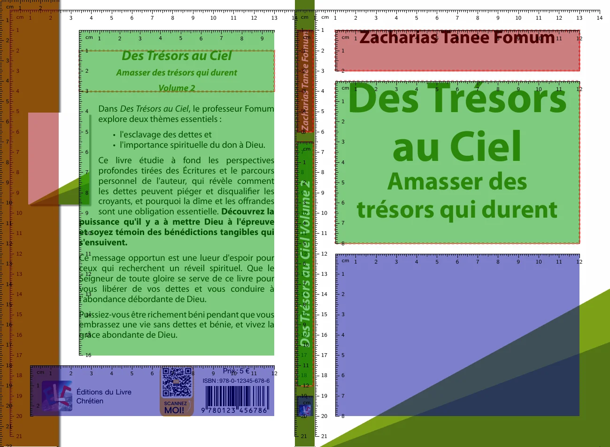
English · Français
Comment chaque propriété du fichier cover-properties.json d’un livre change sa couverture. Chaque image correspond à la couverture par défaut avec les propriétés indiquées à côté : seules celles-ci diffèrent de la couverture par défaut.
Une couverture imprimée est une seule feuille : la quatrième de couverture à gauche, le dos au milieu et la première de couverture à droite. Le nom de chaque propriété commence par la partie qu’elle change : whole-… pour la couverture entière, back-… pour la quatrième, spine-… pour le dos et front-… pour la première. Avec debug-boxes, la couverture montre les zones où le texte est placé : sur la quatrième, l’encadré de marge (rouge), le texte (vert) et la zone du bas avec le logo, le prix et le code-barres (bleu) ; sur le dos et la première, les sections de l’auteur, du titre et de l’épigraphe.
Seulement pour vérifier une mise en page : laissez-la à false sur les vraies couvertures.
{
"debug-boxes": true
}
#RRGGBB, comme dans les logiciels de dessin : #547516 est un vert. Ajoutez deux chiffres pour l’opacité, #RRGGBBAA : 00 est invisible, 80 à moitié transparent, FF opaque.12pt pour les tailles de police, 10mm pour les distances. Elles sont données pour une couverture de 14 × 21 cm, et grandissent avec les couvertures plus grandes (16 × 24 cm)."", signifie que la propriété n’est pas définie : la couverture garde sa valeur par défaut.Chaque partie a un arrière-plan : whole-, back-, spine- et front-background-…, ainsi que l’encadré de marge de la quatrième, back-margin-box-background-…. Un arrière-plan est peint en trois couches, chacune quand elle est définie : la couleur, puis le dégradé, puis l’image. Une image transparente ou un dégradé translucide laisse voir les couches du dessous.
La couverture entière, puis chaque partie, peinte par-dessus.
{
"back-background-color": "#F4EFE1",
"spine-background-color": "#2E4A62",
"front-background-color": "#2E4A62",
"front-background-image": "",
"back-margin-box-background-color": "#C9A227"
}De la couleur de départ, en haut, à la couleur de fin, en bas.
{
"front-background-image": "",
"front-background-color-gradient-start": "#1E3A8A",
"front-background-color-gradient-end": "#93C5FD"
}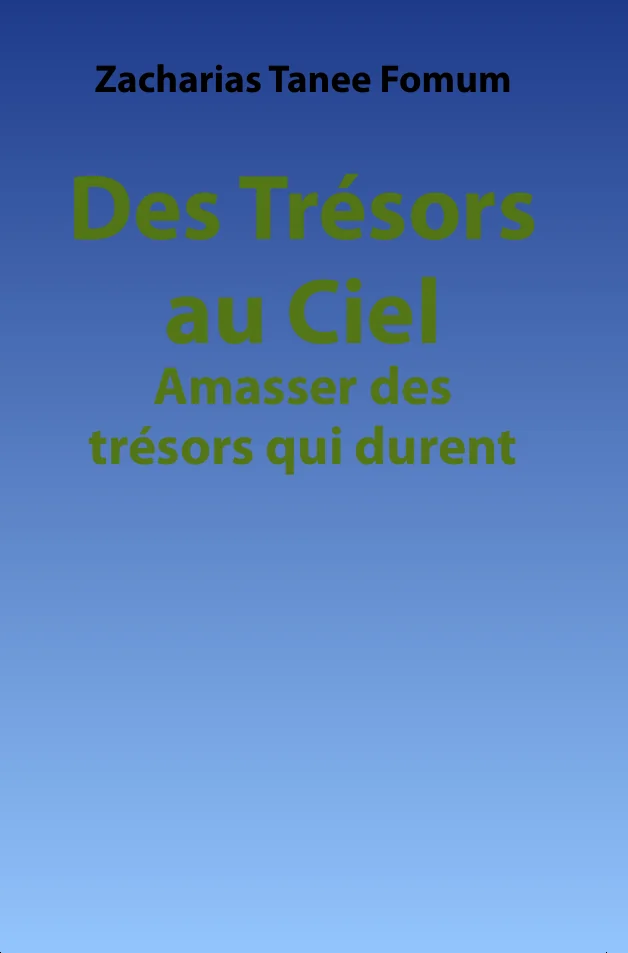
L’angle est donné en degrés, comme en CSS : 0 va vers le haut, 90 vers la droite, 180 (par défaut) vers le bas, 270 vers la gauche.
{
"back-background-color-gradient-start": "#FDE68A",
"back-background-color-gradient-end": "#F97316",
"back-background-color-gradient-angle": 45
}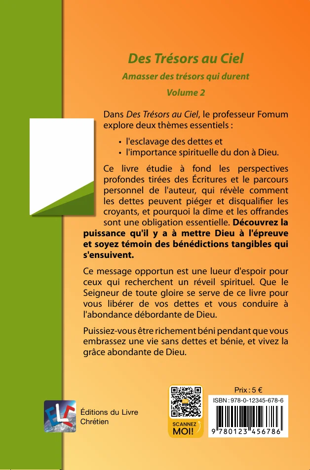
radial va du centre de la partie, dans la couleur de départ, à ses coins, dans la couleur de fin.
{
"front-background-image": "",
"front-background-color-gradient-start": "#FFFFFF",
"front-background-color-gradient-end": "#7EA117",
"front-background-color-gradient-type": "radial"
}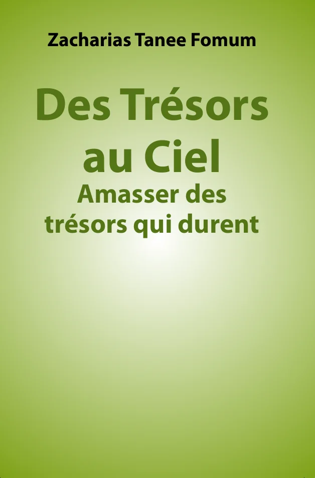
Le dégradé passe du transparent au sombre sur la couleur : les couches s’additionnent.
{
"front-background-image": "",
"front-background-color": "#C2410C",
"front-background-color-gradient-start": "#00000000",
"front-background-color-gradient-end": "#000000CC"
}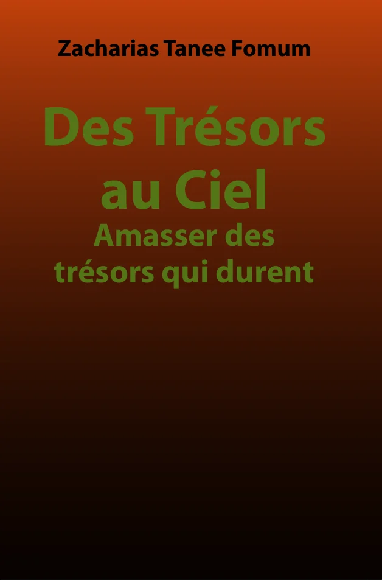
front-background-image-starts-in-spine fait commencer l’image de la première au dos ; back-background-image-expands-into-spine prolonge l’image de la quatrième sur le dos.
{
"front-background-image": "photo.png",
"front-background-image-starts-in-spine": true
}Une bande le long du bord gauche de la quatrième, avec une ombre à sa droite. Elle prend un arrière-plan comme les parties.
{
"back-margin-box-background-color-gradient-start": "#7EA117",
"back-margin-box-background-color-gradient-end": "#1F3A0B"
}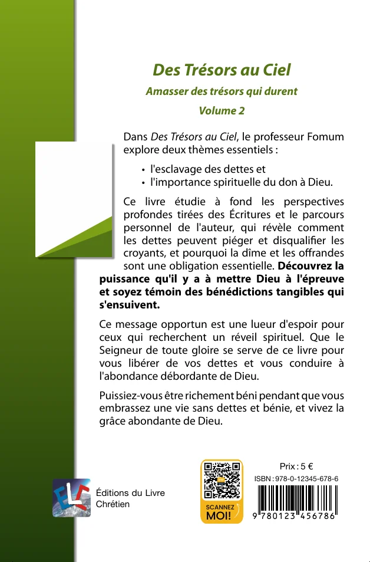
Chaque texte de la couverture a les mêmes propriétés, après son nom : back-title, back-subtitle, back-volume, back-volume-title, spine-author, spine-title, front-author, front-title, front-subtitle, front-volume, front-volume-title et front-epigraph. Un texte rétrécit jusqu’à tenir dans sa zone : sa font-size est la plus grande taille qu’il prend.
font-family est une famille de polices du dossier des polices.
{
"front-title-font-family": "Myriad Pro",
"front-title-font-size": "44pt",
"front-title-text-color": "#B45309"
}text-format vaut None, Bold (gras, celui de la couverture par défaut), Italic (italique) ou Bold-Italic (gras italique) : ici l’auteur est en italique, le titre en romain et le sous-titre en gras italique.
{
"front-author-text-format": "Italic",
"front-title-text-format": "None",
"front-subtitle-text-format": "Bold-Italic"
}
font-weight choisit une graisse de Thin (100) à Black (900) : Light, Medium ou SemiBold, par exemple. Elle remplace le gras de text-format et garde son italique. La famille de polices doit avoir un fichier pour cette graisse dans son dossier, sinon la couverture n’est pas générée : ici le titre est en Praxis SemiBold, et l’auteur en Praxis Regular bien que son format soit Bold.
{
"front-title-font-family": "Praxis",
"front-title-font-weight": "SemiBold",
"front-author-font-family": "Praxis",
"front-author-font-weight": "Regular"
}line-height espace les lignes d’un texte d’un facteur de sa taille de police, comme en CSS : 1.2 par défaut. Un interligne plus serré permet au titre de tenir dans une taille plus grande ; le sous-titre, le volume et le titre du volume utilisent le leur entre leurs propres lignes, ici 1.6 pour le sous-titre sous un titre à 0.95.
{
"front-title-line-height": 0.95,
"front-subtitle-line-height": 1.6
}text-case vaut None, UpperCase (majuscules), TitleCase (une majuscule au début de chaque mot) ou SmallCaps (petites capitales).
{
"front-author-text-case": "SmallCaps",
"front-title-text-case": "UpperCase"
}letter-spacing ajoute de l’espace entre les lettres, en em, une fraction de la taille de la police : 0.1em est courant pour des majuscules ; une valeur négative resserre les lettres.
{
"front-author-letter-spacing": "0.2em",
"front-author-text-case": "UpperCase"
}Deux chiffres de plus dans la couleur rendent le texte translucide.
{
"front-title-text-color": "#54751680"
}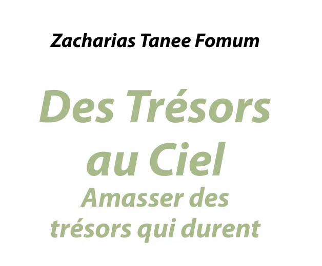
Les bordures, dégradés, images, bandeaux et ombres fonctionnent sur tous les textes sauf le texte de la quatrième. Un dégradé ou une image remplace la couleur du texte ; un dégradé de bordure remplace la couleur de la bordure.
text-border-line-width vaut 1.25pt par défaut.
{
"front-title-text-border-color": "#1F2937",
"front-title-text-border-line-width": "1pt"
}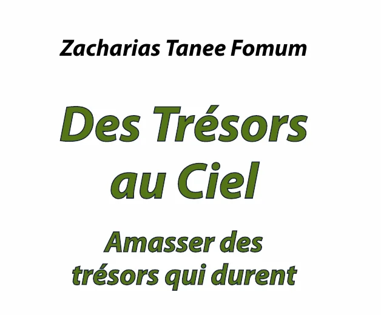
Une bordure est centrée sur le contour des lettres : épaisse, elle les ronge, comme sur l’auteur ici. text-border-position: outside la dessine sous le texte, deux fois plus large, pour que les lettres gardent leur forme, comme sur le titre. Une bordure extérieure demande une couleur opaque et un texte visible, et ne peut pas être un dégradé de bordure.
{
"front-author-text-color": "#FFFFFF",
"front-author-text-border-color": "#1F2937",
"front-author-text-border-line-width": "1.5pt",
"front-title-text-color": "#FFFFFF",
"front-title-text-border-color": "#1F2937",
"front-title-text-border-line-width": "1.5pt",
"front-title-text-border-position": "outside"
}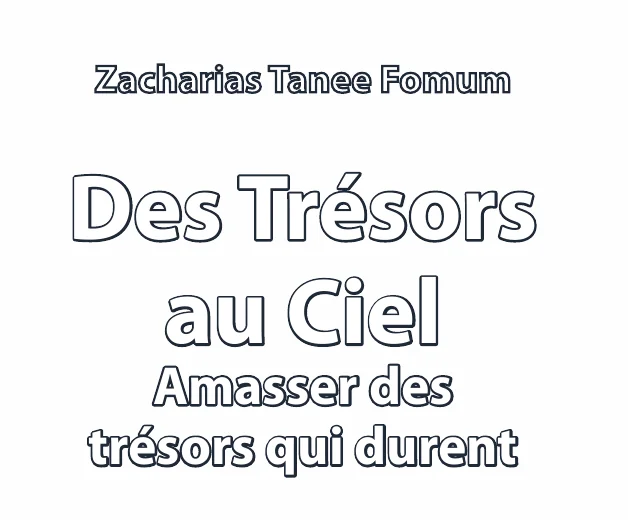
Une couleur de texte entièrement transparente (00) avec une bordure laisse le contour des lettres.
{
"front-title-text-color": "#FFFFFF00",
"front-title-text-border-color": "#547516",
"front-title-text-border-line-width": "1.5pt"
}
Comme un dégradé d’arrière-plan, avec un angle en degrés : ici de la gauche (90) vers la droite.
{
"front-title-text-color-gradient-start": "#C0392B",
"front-title-text-color-gradient-end": "#2E86C1",
"front-title-text-color-gradient-angle": 90
}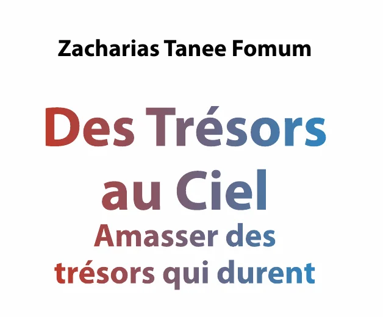
text-color-gradient-stops ajoute des couleurs entre le départ (0) et la fin (100), à leurs positions.
{
"front-title-text-color-gradient-start": "#C0392B",
"front-title-text-color-gradient-end": "#2E86C1",
"front-title-text-color-gradient-stops": [
{
"color": "#F1C40F",
"position": 50
}
]
}
Du centre du texte vers ses coins.
{
"front-title-text-color-gradient-start": "#F1C40F",
"front-title-text-color-gradient-end": "#B91C1C",
"front-title-text-color-gradient-type": "radial"
}text-border-color-gradient-… prend les mêmes valeurs qu’un dégradé de texte.
{
"front-title-text-color": "#FFFFFF",
"front-title-text-border-line-width": "2pt",
"front-title-text-border-color-gradient-start": "#7C3AED",
"front-title-text-border-color-gradient-end": "#DB2777",
"front-title-text-border-color-gradient-angle": 90
}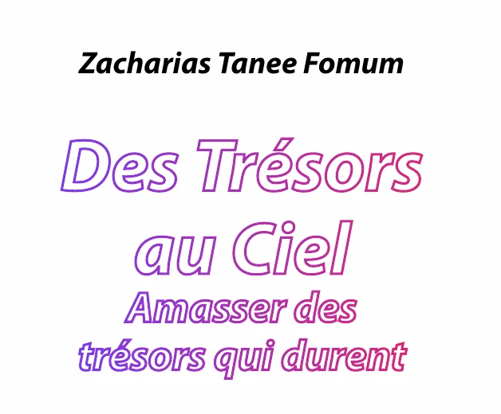
text-image remplit les lettres avec une image du dossier de la couverture.
{
"front-title-text-image": "text-texture.png"
}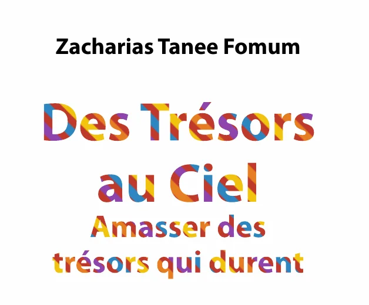
Un bandeau sous le texte : text-background-padding (1mm par défaut) et text-background-radius règlent sa marge et ses coins arrondis.
{
"front-author-text-background-color": "#FFFFFFCC",
"front-author-text-background-padding": "2mm",
"front-author-text-background-radius": "2mm",
"front-background-color": "#2E4A62",
"front-background-image": ""
}text-shadow dessine les lettres une seconde fois sous le texte, dans sa color, décalées de offset-x (vers la droite) et offset-y (vers le bas), 0.5mm par défaut : seule la couleur est obligatoire. Une couleur translucide donne une ombre plus douce ; des décalages négatifs la déplacent vers la gauche ou vers le haut.
{
"front-title-text-shadow": {
"color": "#00000080",
"offset-x": "1mm",
"offset-y": "1mm"
}
}Avec text-extent: block, le titre partage son dégradé, son image et son bandeau avec son sous-titre et son volume.
{
"front-title-text-color-gradient-start": "#C0392B",
"front-title-text-color-gradient-end": "#2E86C1",
"front-title-text-extent": "block"
}rotation tourne l’auteur, le titre ou l’épigraphe dans le sens des aiguilles d’une montre, en degrés : -8 l’incline vers le haut.
{
"front-title-rotation": -8
}
Le sous-titre, le volume et le titre du volume suivent le titre, en dessous. Ils prennent la couleur, la police, la bordure, l’ombre, l’espacement des lettres, la casse et le format du titre, sauf s’ils définissent les leurs ; leur taille est plus petite que celle du titre, sauf s’ils la définissent. …-title-hide-subtitle, -hide-volume et -hide-volume-title les masquent sur la quatrième, le dos ou la première.
La première de couverture masque le volume par défaut.
{
"front-title-hide-volume": false,
"front-subtitle-text-color": "#B45309",
"front-volume-font-size": "20pt"
}La quatrième montre le titre, le texte de présentation du livre et sa vignette, puis l’éditeur, le prix et le code-barres en bas.
back-title-inline l’écrit sur une ligne, back-title-hidden le retire.
{
"back-title-font-size": "24pt",
"back-title-text-case": "UpperCase",
"back-title-text-color": "#B45309"
}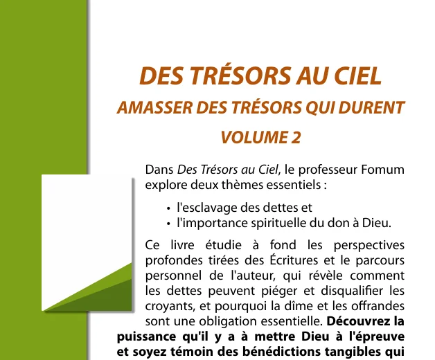
Sa police, sa taille et sa couleur. Le texte rétrécit à partir de cette taille jusqu’à tenir.
{
"back-content-font-size": "11pt",
"back-content-text-color": "#1F3A0B"
}
Une petite image dans le texte, encadrée avec une ombre. back-thumbnail-top-line-skip la descend d’un nombre de lignes de texte ; -width et -hoffset (jusqu’où elle entre dans l’encadré de marge) règlent sa taille et sa place.
{
"back-thumbnail-top-line-skip": 4,
"back-thumbnail-width": "35mm",
"back-thumbnail-hoffset": "20mm"
}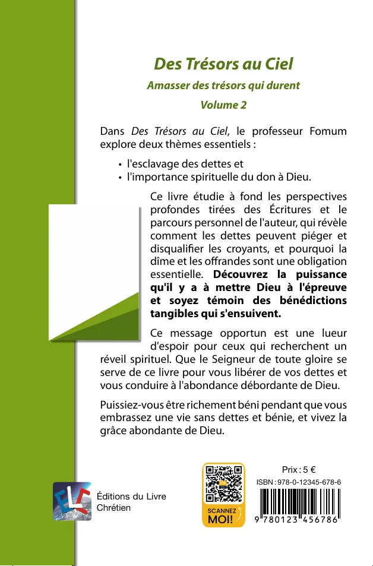
Avec back-thumbnail-wrap: contour, le texte suit le contour d’une image à fond transparent.
{
"back-thumbnail-image": "back-thumbnail.png",
"back-thumbnail-wrap": "contour"
}
Le dos montre l’auteur en haut, le titre au milieu et le logo de l’éditeur en bas. spine-title-visible masque le titre.
Le volume suit le titre sur le dos.
{
"spine-background-color": "#1F2937",
"spine-title-text-color": "#FDE68A",
"spine-title-text-case": "UpperCase"
}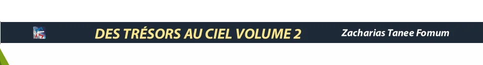
La première empile trois sections : par défaut l’auteur (en haut), le titre (au milieu) et l’épigraphe (en bas). Un cadre place un texte à des coordonnées précises à la place.
front-section-layout: big-title donne au titre les trois quarts de la hauteur, à l’épigraphe un quart.
{
"front-section-layout": "big-title",
"debug-boxes": true
}
section choisit la section de l’auteur, du titre ou de l’épigraphe, avec son alignement. Deux textes ne peuvent pas partager une section.
{
"front-author-section": {
"name": "lower",
"valign": "bottom",
"halign": "center"
},
"front-title-section": {
"name": "upper",
"valign": "top",
"halign": "center"
}
}box place le texte dans un rectangle mesuré depuis le coin supérieur gauche de la première, sur une couverture de 14 × 21 cm.
{
"front-title-box": {
"top": "120mm",
"left": "15mm",
"bottom": "170mm",
"right": "90mm",
"valign": "center",
"halign": "left"
},
"debug-boxes": true
}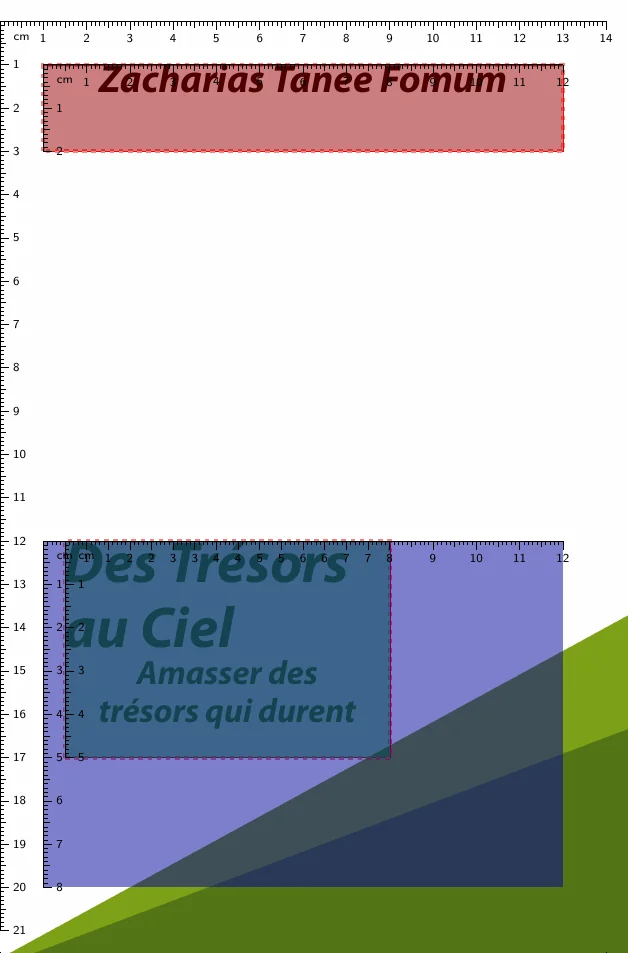
Une citation sous le titre, affichée avec front-epigraph-visible.
{
"front-epigraph-visible": true,
"front-epigraph-font-size": "13pt",
"front-epigraph-text-color": "#547516",
"front-epigraph-text-format": "Italic",
"front-epigraph-font-family": "Myriad Pro",
"front-background-image": "",
"front-background-color": "#F4EFE1"
}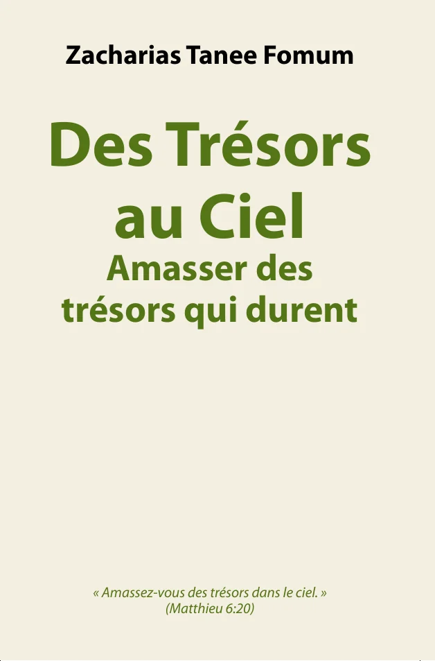
Chaque famille de polices utilisée par une couverture a un dossier du même nom dans le dossier Nextcloud Book covers/_fonts, par exemple Book covers/_fonts/Myriad Pro. Choisissez une famille dans ce dossier, et écrivez le nom exact de son dossier dans les propriétés …-font-family. Une famille sans dossier arrête la génération de la couverture.
Book covers/_fonts..ttf ou .otf, un par style. Le style normal est obligatoire ; le gras, l’italique et le gras italique servent aux textes Bold, Italic et Bold-Italic. Les autres graisses servent à font-weight : Thin, ExtraLight, Light, Medium, SemiBold, ExtraBold et Black, chacune avec son italique, comme LightItalic.fontconfig.json, qui donne le nom de la famille et le fichier de chaque style :{
"family": "Myriad Pro",
"files": {
"Regular": "MyriadPro-Regular.ttf",
"Bold": "MyriadPro-Bold.ttf",
"Italic": "MyriadPro-Italic.ttf",
"BoldItalic": "MyriadPro-BoldItalic.ttf"
}
}Une seule couverture sert à toutes les langues d’un livre. languages change quelques propriétés pour une langue, comme une taille de police ou un cadre ; font-substitutions remplace les polices qui n’ont pas les lettres d’une langue, comme les lettres russes dans une police faite pour le français. Une police de remplacement a aussi besoin de son dossier dans _fonts, sauf si elle est installée avec docpross.
{
"front-title-font-size": "60pt",
"languages": {
"am": {
"front-title-font-size": "40pt"
}
},
"font-substitutions": {
"ru": {
"*": "Noto Sans",
"Abadi MT": "Noto Sans Light"
}
}
}cover-layout-properties.schema.json. Les descriptions viennent du schéma, en anglais.| Propriété | Rôle | Valeurs | Par défaut |
|---|---|---|---|
debug-boxes | Shows box dimensions for debugging purposes (works only in draft mode) | true ou false | false |
inner-bleed-width | Width of the inner bleed area (e.g., 10mm or 1cm) | une longueur en mm, cm | "10mm" |
font-substitutions | Font families to replace for a book language, keyed by language code (e.g., ru, zh-Hans), each mapping a font family of the cover, or * for every other family, to its replacement: a font family name, or an object with the font family and the fontspec options it needs when it is installed (e.g., Script=Arabic). They add to the shared substitutions of docpross and win over them. A language without an entry uses its locale's (zh for zh-Hans); font families set in languages are not replaced. | un objet | — |
languages | Cover properties that change for a book language, keyed by language code (e.g., am, zh-Hans); a language without an entry uses its locale's (zh for zh-Hans). Font families left unchanged here follow the shared font substitutions of the language. | un objet | — |
whole-background-… 2 propriétés| Propriété | Rôle | Valeurs | Par défaut |
|---|---|---|---|
whole-background-color | Hex color code (#RRGGBB, or #RRGGBBAA where AA is the opacity from 00 to FF) for the entire cover background | une couleur, #RRGGBB ou #RRGGBBAA | "#FFFFFF" |
whole-background-image | Path to the background image file for the entire cover | un nom de fichier image | — |
back-background-… 9 propriétés| Propriété | Rôle | Valeurs | Par défaut |
|---|---|---|---|
back-background-color | Hex color code (#RRGGBB, or #RRGGBBAA where AA is the opacity from 00 to FF) for the back cover background | une couleur, #RRGGBB ou #RRGGBBAA | "#FFFFFF" |
back-background-color-gradient-start | Hex color code (#RRGGBB, or #RRGGBBAA where AA is the opacity from 00 to FF) where the back cover background gradient starts: at the top by default, at the center of a radial gradient | une couleur, #RRGGBB ou #RRGGBBAA | — |
back-background-color-gradient-end | Hex color code (#RRGGBB, or #RRGGBBAA where AA is the opacity from 00 to FF) where the back cover background gradient ends: at the bottom by default, at the corners of a radial gradient | une couleur, #RRGGBB ou #RRGGBBAA | — |
back-background-color-gradient-top | Deprecated: use back-background-color-gradient-start | une couleur, #RRGGBB ou #RRGGBBAA | — |
back-background-color-gradient-bottom | Deprecated: use back-background-color-gradient-end | une couleur, #RRGGBB ou #RRGGBBAA | — |
back-background-color-gradient-angle | Direction of a linear back cover background gradient, in degrees, as in CSS: 0 goes upwards, 90 to the right, 180 downwards; empty means 180 | un nombre de degrés, de 0 à 360 | 180 |
back-background-color-gradient-type | Shape of the back cover background gradient: linear, along the angle, or radial, from the center to the corners; empty means linear | linear, radial | "linear" |
back-background-image | Path to the background image file for the back cover | un nom de fichier image | — |
back-background-image-expands-into-spine | Allows the back background image to expand into the spine | true ou false | false |
back-margin-box-… 8 propriétés| Propriété | Rôle | Valeurs | Par défaut |
|---|---|---|---|
back-margin-box-background-color | Hex color code (#RRGGBB, or #RRGGBBAA where AA is the opacity from 00 to FF) for the back cover margin box background | une couleur, #RRGGBB ou #RRGGBBAA | "#7EA117" |
back-margin-box-background-color-gradient-start | Hex color code (#RRGGBB, or #RRGGBBAA where AA is the opacity from 00 to FF) where the back cover margin box background gradient starts: at the top by default, at the center of a radial gradient | une couleur, #RRGGBB ou #RRGGBBAA | — |
back-margin-box-background-color-gradient-end | Hex color code (#RRGGBB, or #RRGGBBAA where AA is the opacity from 00 to FF) where the back cover margin box background gradient ends: at the bottom by default, at the corners of a radial gradient | une couleur, #RRGGBB ou #RRGGBBAA | — |
back-margin-box-background-color-gradient-top | Deprecated: use back-margin-box-background-color-gradient-start | une couleur, #RRGGBB ou #RRGGBBAA | — |
back-margin-box-background-color-gradient-bottom | Deprecated: use back-margin-box-background-color-gradient-end | une couleur, #RRGGBB ou #RRGGBBAA | — |
back-margin-box-background-color-gradient-angle | Direction of a linear back cover margin box background gradient, in degrees, as in CSS: 0 goes upwards, 90 to the right, 180 downwards; empty means 180 | un nombre de degrés, de 0 à 360 | 180 |
back-margin-box-background-color-gradient-type | Shape of the back cover margin box background gradient: linear, along the angle, or radial, from the center to the corners; empty means linear | linear, radial | "linear" |
back-margin-box-background-image | Path to the background image file for the back cover margin box | un nom de fichier image | — |
back-title-… 32 propriétés| Propriété | Rôle | Valeurs | Par défaut |
|---|---|---|---|
back-title-text-color | Hex color code (#RRGGBB, or #RRGGBBAA where AA is the opacity from 00 to FF) for the back cover title text | une couleur, #RRGGBB ou #RRGGBBAA | "#547516" |
back-title-text-color-gradient-start | Hex color code (#RRGGBB, or #RRGGBBAA where AA is the opacity from 00 to FF) where the back cover title text gradient starts. With the end color, the gradient replaces the text color. | une couleur, #RRGGBB ou #RRGGBBAA | — |
back-title-text-color-gradient-end | Hex color code (#RRGGBB, or #RRGGBBAA where AA is the opacity from 00 to FF) where the back cover title text gradient ends | une couleur, #RRGGBB ou #RRGGBBAA | — |
back-title-text-color-gradient-angle | Direction of the back cover title text gradient, in degrees, as in CSS: 0 goes upwards, 90 to the right, 180 downwards; empty means 180 | un nombre de degrés, de 0 à 360 | 180 |
back-title-text-color-gradient-type | Shape of the back cover title text gradient: linear, along the angle, or radial, from the center of the text to its corners; empty means linear | linear, radial | "linear" |
back-title-text-color-gradient-stops | Colors of the back cover title text gradient between its start and end colors, with positions in order | une liste de {color, position}, positions de 0 à 100 | — |
back-title-text-border-color | Hex color code (#RRGGBB, or #RRGGBBAA where AA is the opacity from 00 to FF) for the back cover title text border | une couleur, #RRGGBB ou #RRGGBBAA | — |
back-title-text-border-line-width | Border line width for the back cover title text (e.g., 1.25pt or 1mm) | une longueur en pt | "1.25pt" |
back-title-text-border-position | Position of the border of the back cover title text: center, on the outline of the letters, or outside, drawn under the text at twice the line width so that the letters keep their shape. An outside border needs an opaque border color and a visible text color, gradient or image, and cannot be a border gradient. Empty means center. | center, outside | — |
back-title-text-border-color-gradient-start | Hex color code (#RRGGBB, or #RRGGBBAA where AA is the opacity from 00 to FF) where the back cover title text border gradient starts. With the end color, the gradient replaces the border color. | une couleur, #RRGGBB ou #RRGGBBAA | — |
back-title-text-border-color-gradient-end | Hex color code (#RRGGBB, or #RRGGBBAA where AA is the opacity from 00 to FF) where the back cover title text border gradient ends | une couleur, #RRGGBB ou #RRGGBBAA | — |
back-title-text-border-color-gradient-angle | Direction of the back cover title text border gradient, in degrees, as in CSS: 0 goes upwards, 90 to the right, 180 downwards; empty means 180 | un nombre de degrés, de 0 à 360 | 180 |
back-title-text-border-color-gradient-type | Shape of the back cover title text border gradient: linear, along the angle, or radial, from the center of the text to its corners; empty means linear | linear, radial | "linear" |
back-title-text-border-color-gradient-stops | Colors of the back cover title text border gradient between its start and end colors, with positions in order | une liste de {color, position}, positions de 0 à 100 | — |
back-title-text-background-color | Hex color code (#RRGGBB, or #RRGGBBAA where AA is the opacity from 00 to FF) of a band drawn behind the back cover title text; empty means no band | une couleur, #RRGGBB ou #RRGGBBAA | — |
back-title-text-background-padding | Space between the back cover title text and the edges of its background band (e.g., 1mm or 3pt); empty means 1mm | une longueur en pt, mm, cm | "1mm" |
back-title-text-background-radius | Corner radius of the background band of the back cover title text (e.g., 2mm); empty means square corners | une longueur en pt, mm, cm | — |
back-title-letter-spacing | Extra space between the letters of the back cover title text, in em, a fraction of the font size (e.g., 0.1em for spaced capitals, or -0.02em to tighten); empty means the spacing of the font | une longueur en em, une fraction de la taille de la police | — |
back-title-text-shadow | Drop shadow of the back cover title text: the letters drawn again under the text, in the shadow color and offset; absent means no shadow | un objet : color, offset-x, offset-y | — |
back-title-text-image | Image filling the back cover title text, relative to the cover directory: it covers the text, centered, and replaces the text color. It cannot be set with a text gradient. | un nom de fichier image | — |
back-title-text-extent | What the text gradient, image and background band of the back cover title cover: the title alone, or the block of the title with its subtitle, volume and volume title, which then share one gradient; empty means title | title, block | "title" |
back-title-text-format | Text formatting style for the back cover title | None, Bold, Italic, Bold-Italic | "Bold-Italic" |
back-title-font-weight | Weight of the back cover title, from Thin (100) to Black (900), replacing the bold of its text format; its italic stays. The font family needs a file for the weight in its font configuration. Empty means the weight of the text format. | Thin, ExtraLight, Light, Regular, Medium, SemiBold, Bold, ExtraBold, Black | — |
back-title-line-height | Line height of the back cover title, a factor of its font size, as in CSS (e.g., 1 for tight lines, 1.5 for airy ones). A tighter line height also lets the text fit at a larger size; empty means 1.2. | un facteur de la taille de la police, plus de 0, au plus 3 | — |
back-title-text-case | Text case transformation for the back cover title | None, TitleCase, SmallCaps, UpperCase | "None" |
back-title-font-size | Font size for the back cover title (e.g., 18pt) | une longueur en pt | "18pt" |
back-title-font-family | Font family name for the back cover title | une famille de polices | "Myriad Pro" |
back-title-hide-subtitle | Toggles the visibility of the back cover subtitle | true ou false | false |
back-title-hide-volume | Toggles the visibility of the back cover volume | true ou false | false |
back-title-hide-volume-title | Toggles the visibility of the back cover volume title | true ou false | false |
back-title-inline | Displays the back title inline with other content | true ou false | true |
back-subtitle-… 26 propriétés| Propriété | Rôle | Valeurs | Par défaut |
|---|---|---|---|
back-subtitle-text-color | Hex color code (#RRGGBB, or #RRGGBBAA where AA is the opacity from 00 to FF) for the back cover subtitle text | une couleur, #RRGGBB ou #RRGGBBAA | — |
back-subtitle-text-color-gradient-start | Hex color code (#RRGGBB, or #RRGGBBAA where AA is the opacity from 00 to FF) where the back cover subtitle text gradient starts. With the end color, the gradient replaces the text color. When neither this gradient nor the text color is set, the back cover title gradient applies. | une couleur, #RRGGBB ou #RRGGBBAA | — |
back-subtitle-text-color-gradient-end | Hex color code (#RRGGBB, or #RRGGBBAA where AA is the opacity from 00 to FF) where the back cover subtitle text gradient ends | une couleur, #RRGGBB ou #RRGGBBAA | — |
back-subtitle-text-color-gradient-angle | Direction of the back cover subtitle text gradient, in degrees, as in CSS: 0 goes upwards, 90 to the right, 180 downwards; empty means 180 | un nombre de degrés, de 0 à 360 | 180 |
back-subtitle-text-color-gradient-type | Shape of the back cover subtitle text gradient: linear, along the angle, or radial, from the center of the text to its corners; empty means linear | linear, radial | "linear" |
back-subtitle-text-color-gradient-stops | Colors of the back cover subtitle text gradient between its start and end colors, with positions in order | une liste de {color, position}, positions de 0 à 100 | — |
back-subtitle-text-border-color | Hex color code (#RRGGBB, or #RRGGBBAA where AA is the opacity from 00 to FF) for the back cover subtitle text border | une couleur, #RRGGBB ou #RRGGBBAA | — |
back-subtitle-text-border-line-width | Border line width for the back cover subtitle text (e.g., 1.25pt or 1mm) | une longueur en pt, mm | "1.25pt" |
back-subtitle-text-border-position | Position of the border of the back cover subtitle text: center, on the outline of the letters, or outside, drawn under the text at twice the line width so that the letters keep their shape. An outside border needs an opaque border color and a visible text color, gradient or image, and cannot be a border gradient. Empty means the title's. | center, outside | — |
back-subtitle-text-border-color-gradient-start | Hex color code (#RRGGBB, or #RRGGBBAA where AA is the opacity from 00 to FF) where the back cover subtitle text border gradient starts. With the end color, the gradient replaces the border color. | une couleur, #RRGGBB ou #RRGGBBAA | — |
back-subtitle-text-border-color-gradient-end | Hex color code (#RRGGBB, or #RRGGBBAA where AA is the opacity from 00 to FF) where the back cover subtitle text border gradient ends | une couleur, #RRGGBB ou #RRGGBBAA | — |
back-subtitle-text-border-color-gradient-angle | Direction of the back cover subtitle text border gradient, in degrees, as in CSS: 0 goes upwards, 90 to the right, 180 downwards; empty means 180 | un nombre de degrés, de 0 à 360 | 180 |
back-subtitle-text-border-color-gradient-type | Shape of the back cover subtitle text border gradient: linear, along the angle, or radial, from the center of the text to its corners; empty means linear | linear, radial | "linear" |
back-subtitle-text-border-color-gradient-stops | Colors of the back cover subtitle text border gradient between its start and end colors, with positions in order | une liste de {color, position}, positions de 0 à 100 | — |
back-subtitle-text-background-color | Hex color code (#RRGGBB, or #RRGGBBAA where AA is the opacity from 00 to FF) of a band drawn behind the back cover subtitle text; empty means no band | une couleur, #RRGGBB ou #RRGGBBAA | — |
back-subtitle-text-background-padding | Space between the back cover subtitle text and the edges of its background band (e.g., 1mm or 3pt); empty means 1mm | une longueur en pt, mm, cm | "1mm" |
back-subtitle-text-background-radius | Corner radius of the background band of the back cover subtitle text (e.g., 2mm); empty means square corners | une longueur en pt, mm, cm | — |
back-subtitle-letter-spacing | Extra space between the letters of the back cover subtitle text, in em, a fraction of the font size (e.g., 0.1em for spaced capitals, or -0.02em to tighten); empty means the title's | une longueur en em, une fraction de la taille de la police | — |
back-subtitle-text-shadow | Drop shadow of the back cover subtitle text: the letters drawn again under the text, in the shadow color and offset; absent means the title's shadow | un objet : color, offset-x, offset-y | — |
back-subtitle-text-image | Image filling the back cover subtitle text, relative to the cover directory: it covers the text, centered, and replaces the text color. It cannot be set with a text gradient. | un nom de fichier image | — |
back-subtitle-text-format | Text formatting style for the back cover subtitle | None, Bold, Italic, Bold-Italic | "Bold-Italic" |
back-subtitle-font-weight | Weight of the back cover subtitle, from Thin (100) to Black (900), replacing the bold of its text format; its italic stays. The font family needs a file for the weight in its font configuration. Empty means the title's. | Thin, ExtraLight, Light, Regular, Medium, SemiBold, Bold, ExtraBold, Black | — |
back-subtitle-line-height | Line height of the back cover subtitle, a factor of its font size, as in CSS (e.g., 1 for tight lines, 1.5 for airy ones). It sets the spacing between its own lines when it takes several; empty means the title's. | un facteur de la taille de la police, plus de 0, au plus 3 | — |
back-subtitle-text-case | Text case transformation for the back cover subtitle | None, TitleCase, SmallCaps, UpperCase | "None" |
back-subtitle-font-size | Font size for the back cover subtitle (e.g., 14pt) | une longueur en pt | — |
back-subtitle-font-family | Font family name for the back cover subtitle (a folder of Book covers/_fonts) | une famille de polices | "Myriad Pro" |
back-volume-… 26 propriétés| Propriété | Rôle | Valeurs | Par défaut |
|---|---|---|---|
back-volume-text-color | Hex color code (#RRGGBB, or #RRGGBBAA where AA is the opacity from 00 to FF) for the back cover volume text | une couleur, #RRGGBB ou #RRGGBBAA | — |
back-volume-text-color-gradient-start | Hex color code (#RRGGBB, or #RRGGBBAA where AA is the opacity from 00 to FF) where the back cover volume text gradient starts. With the end color, the gradient replaces the text color. When neither this gradient nor the text color is set, the back cover title gradient applies. | une couleur, #RRGGBB ou #RRGGBBAA | — |
back-volume-text-color-gradient-end | Hex color code (#RRGGBB, or #RRGGBBAA where AA is the opacity from 00 to FF) where the back cover volume text gradient ends | une couleur, #RRGGBB ou #RRGGBBAA | — |
back-volume-text-color-gradient-angle | Direction of the back cover volume text gradient, in degrees, as in CSS: 0 goes upwards, 90 to the right, 180 downwards; empty means 180 | un nombre de degrés, de 0 à 360 | 180 |
back-volume-text-color-gradient-type | Shape of the back cover volume text gradient: linear, along the angle, or radial, from the center of the text to its corners; empty means linear | linear, radial | "linear" |
back-volume-text-color-gradient-stops | Colors of the back cover volume text gradient between its start and end colors, with positions in order | une liste de {color, position}, positions de 0 à 100 | — |
back-volume-text-border-color | Hex color code (#RRGGBB, or #RRGGBBAA where AA is the opacity from 00 to FF) for the back cover volume text border | une couleur, #RRGGBB ou #RRGGBBAA | — |
back-volume-text-border-line-width | Border line width for the back cover volume text (e.g., 1.25pt or 1mm) | une longueur en pt, mm | "1.25pt" |
back-volume-text-border-position | Position of the border of the back cover volume text: center, on the outline of the letters, or outside, drawn under the text at twice the line width so that the letters keep their shape. An outside border needs an opaque border color and a visible text color, gradient or image, and cannot be a border gradient. Empty means the title's. | center, outside | — |
back-volume-text-border-color-gradient-start | Hex color code (#RRGGBB, or #RRGGBBAA where AA is the opacity from 00 to FF) where the back cover volume text border gradient starts. With the end color, the gradient replaces the border color. | une couleur, #RRGGBB ou #RRGGBBAA | — |
back-volume-text-border-color-gradient-end | Hex color code (#RRGGBB, or #RRGGBBAA where AA is the opacity from 00 to FF) where the back cover volume text border gradient ends | une couleur, #RRGGBB ou #RRGGBBAA | — |
back-volume-text-border-color-gradient-angle | Direction of the back cover volume text border gradient, in degrees, as in CSS: 0 goes upwards, 90 to the right, 180 downwards; empty means 180 | un nombre de degrés, de 0 à 360 | 180 |
back-volume-text-border-color-gradient-type | Shape of the back cover volume text border gradient: linear, along the angle, or radial, from the center of the text to its corners; empty means linear | linear, radial | "linear" |
back-volume-text-border-color-gradient-stops | Colors of the back cover volume text border gradient between its start and end colors, with positions in order | une liste de {color, position}, positions de 0 à 100 | — |
back-volume-text-background-color | Hex color code (#RRGGBB, or #RRGGBBAA where AA is the opacity from 00 to FF) of a band drawn behind the back cover volume text; empty means no band | une couleur, #RRGGBB ou #RRGGBBAA | — |
back-volume-text-background-padding | Space between the back cover volume text and the edges of its background band (e.g., 1mm or 3pt); empty means 1mm | une longueur en pt, mm, cm | "1mm" |
back-volume-text-background-radius | Corner radius of the background band of the back cover volume text (e.g., 2mm); empty means square corners | une longueur en pt, mm, cm | — |
back-volume-letter-spacing | Extra space between the letters of the back cover volume text, in em, a fraction of the font size (e.g., 0.1em for spaced capitals, or -0.02em to tighten); empty means the title's | une longueur en em, une fraction de la taille de la police | — |
back-volume-text-shadow | Drop shadow of the back cover volume text: the letters drawn again under the text, in the shadow color and offset; absent means the title's shadow | un objet : color, offset-x, offset-y | — |
back-volume-text-image | Image filling the back cover volume text, relative to the cover directory: it covers the text, centered, and replaces the text color. It cannot be set with a text gradient. | un nom de fichier image | — |
back-volume-text-format | Text formatting style for the back cover volume | None, Bold, Italic, Bold-Italic | "Bold-Italic" |
back-volume-font-weight | Weight of the back cover volume, from Thin (100) to Black (900), replacing the bold of its text format; its italic stays. The font family needs a file for the weight in its font configuration. Empty means the title's. | Thin, ExtraLight, Light, Regular, Medium, SemiBold, Bold, ExtraBold, Black | — |
back-volume-line-height | Line height of the back cover volume, a factor of its font size, as in CSS (e.g., 1 for tight lines, 1.5 for airy ones). It sets the spacing between its own lines when it takes several; empty means the title's. | un facteur de la taille de la police, plus de 0, au plus 3 | — |
back-volume-text-case | Text case transformation for the back cover volume | None, TitleCase, SmallCaps, UpperCase | "None" |
back-volume-font-size | Font size for the back cover volume (e.g., 14pt) | une longueur en pt | — |
back-volume-font-family | Font family name for the back cover volume (a folder of Book covers/_fonts) | une famille de polices | "Myriad Pro" |
back-volume-title-… 26 propriétés| Propriété | Rôle | Valeurs | Par défaut |
|---|---|---|---|
back-volume-title-text-color | Hex color code (#RRGGBB, or #RRGGBBAA where AA is the opacity from 00 to FF) for the back cover volume title text | une couleur, #RRGGBB ou #RRGGBBAA | — |
back-volume-title-text-color-gradient-start | Hex color code (#RRGGBB, or #RRGGBBAA where AA is the opacity from 00 to FF) where the back cover volume title text gradient starts. With the end color, the gradient replaces the text color. When neither this gradient nor the text color is set, the back cover title gradient applies. | une couleur, #RRGGBB ou #RRGGBBAA | — |
back-volume-title-text-color-gradient-end | Hex color code (#RRGGBB, or #RRGGBBAA where AA is the opacity from 00 to FF) where the back cover volume title text gradient ends | une couleur, #RRGGBB ou #RRGGBBAA | — |
back-volume-title-text-color-gradient-angle | Direction of the back cover volume title text gradient, in degrees, as in CSS: 0 goes upwards, 90 to the right, 180 downwards; empty means 180 | un nombre de degrés, de 0 à 360 | 180 |
back-volume-title-text-color-gradient-type | Shape of the back cover volume title text gradient: linear, along the angle, or radial, from the center of the text to its corners; empty means linear | linear, radial | "linear" |
back-volume-title-text-color-gradient-stops | Colors of the back cover volume title text gradient between its start and end colors, with positions in order | une liste de {color, position}, positions de 0 à 100 | — |
back-volume-title-text-border-color | Hex color code (#RRGGBB, or #RRGGBBAA where AA is the opacity from 00 to FF) for the back cover volume title text border | une couleur, #RRGGBB ou #RRGGBBAA | — |
back-volume-title-text-border-line-width | Border line width for the back cover volume title text (e.g., 1.25pt or 1mm) | une longueur en pt, mm | "1.25pt" |
back-volume-title-text-border-position | Position of the border of the back cover volume title text: center, on the outline of the letters, or outside, drawn under the text at twice the line width so that the letters keep their shape. An outside border needs an opaque border color and a visible text color, gradient or image, and cannot be a border gradient. Empty means the title's. | center, outside | — |
back-volume-title-text-border-color-gradient-start | Hex color code (#RRGGBB, or #RRGGBBAA where AA is the opacity from 00 to FF) where the back cover volume title text border gradient starts. With the end color, the gradient replaces the border color. | une couleur, #RRGGBB ou #RRGGBBAA | — |
back-volume-title-text-border-color-gradient-end | Hex color code (#RRGGBB, or #RRGGBBAA where AA is the opacity from 00 to FF) where the back cover volume title text border gradient ends | une couleur, #RRGGBB ou #RRGGBBAA | — |
back-volume-title-text-border-color-gradient-angle | Direction of the back cover volume title text border gradient, in degrees, as in CSS: 0 goes upwards, 90 to the right, 180 downwards; empty means 180 | un nombre de degrés, de 0 à 360 | 180 |
back-volume-title-text-border-color-gradient-type | Shape of the back cover volume title text border gradient: linear, along the angle, or radial, from the center of the text to its corners; empty means linear | linear, radial | "linear" |
back-volume-title-text-border-color-gradient-stops | Colors of the back cover volume title text border gradient between its start and end colors, with positions in order | une liste de {color, position}, positions de 0 à 100 | — |
back-volume-title-text-background-color | Hex color code (#RRGGBB, or #RRGGBBAA where AA is the opacity from 00 to FF) of a band drawn behind the back cover volume title text; empty means no band | une couleur, #RRGGBB ou #RRGGBBAA | — |
back-volume-title-text-background-padding | Space between the back cover volume title text and the edges of its background band (e.g., 1mm or 3pt); empty means 1mm | une longueur en pt, mm, cm | "1mm" |
back-volume-title-text-background-radius | Corner radius of the background band of the back cover volume title text (e.g., 2mm); empty means square corners | une longueur en pt, mm, cm | — |
back-volume-title-letter-spacing | Extra space between the letters of the back cover volume title text, in em, a fraction of the font size (e.g., 0.1em for spaced capitals, or -0.02em to tighten); empty means the title's | une longueur en em, une fraction de la taille de la police | — |
back-volume-title-text-shadow | Drop shadow of the back cover volume title text: the letters drawn again under the text, in the shadow color and offset; absent means the title's shadow | un objet : color, offset-x, offset-y | — |
back-volume-title-text-image | Image filling the back cover volume title text, relative to the cover directory: it covers the text, centered, and replaces the text color. It cannot be set with a text gradient. | un nom de fichier image | — |
back-volume-title-text-format | Text formatting style for the back cover volume title | None, Bold, Italic, Bold-Italic | "Bold-Italic" |
back-volume-title-font-weight | Weight of the back cover volume title, from Thin (100) to Black (900), replacing the bold of its text format; its italic stays. The font family needs a file for the weight in its font configuration. Empty means the title's. | Thin, ExtraLight, Light, Regular, Medium, SemiBold, Bold, ExtraBold, Black | — |
back-volume-title-line-height | Line height of the back cover volume title, a factor of its font size, as in CSS (e.g., 1 for tight lines, 1.5 for airy ones). It sets the spacing between its own lines when it takes several; empty means the title's. | un facteur de la taille de la police, plus de 0, au plus 3 | — |
back-volume-title-text-case | Text case transformation for the back cover volume title | None, TitleCase, SmallCaps, UpperCase | "None" |
back-volume-title-font-size | Font size for the back cover volume title (e.g., 14pt) | une longueur en pt | — |
back-volume-title-font-family | Font family name for the back cover volume title (a folder of Book covers/_fonts) | une famille de polices | "Myriad Pro" |
back-content-… 3 propriétés| Propriété | Rôle | Valeurs | Par défaut |
|---|---|---|---|
back-content-text-color | Hex color code (#RRGGBB, or #RRGGBBAA where AA is the opacity from 00 to FF) for the back cover content text | une couleur, #RRGGBB ou #RRGGBBAA | "#000000" |
back-content-font-size | Font size for the back cover content (e.g., 12pt) | une longueur en pt | "12pt" |
back-content-font-family | Font family name for the back cover content | une famille de polices | "Myriad Pro" |
back-thumbnail-… 6 propriétés| Propriété | Rôle | Valeurs | Par défaut |
|---|---|---|---|
back-thumbnail-image | Path to the thumbnail image file for the back cover | un nom de fichier image | "front-background.png" |
back-thumbnail-top-line-skip | Number of lines to skip before placing the back cover thumbnail | un nombre entier | 0 |
back-thumbnail-wrap | How the back cover text wraps around the thumbnail: around its rectangle, framed with a shadow (box), or along the outline of its opaque pixels (contour, which needs an image with transparency) | box, contour | "box" |
back-thumbnail-width | Width of the back cover thumbnail, for a 140 mm x 210 mm cover (e.g., 30mm). Empty uses the default of the wrap mode: 30mm for box, 45mm for contour | une longueur en mm | — |
back-thumbnail-hoffset | How far the back cover thumbnail extends left of the back cover text, into the margin block, for a 140 mm x 210 mm cover (e.g., 25mm). Empty uses the default of the wrap mode: 25mm for box, 30mm for contour | une longueur en mm | — |
back-thumbnail-top-line-skip-map | Mapping by language of the number of lines to skip before placing the back cover thumbnail | un objet : ar, de, en, es, es-cu, fr, hi, it, mg, pt, pt-ao, pt-br, ru, zh-hans | — |
spine-background-… 8 propriétés| Propriété | Rôle | Valeurs | Par défaut |
|---|---|---|---|
spine-background-color | Hex color code (#RRGGBB, or #RRGGBBAA where AA is the opacity from 00 to FF) for the spine background | une couleur, #RRGGBB ou #RRGGBBAA | "#547516" |
spine-background-color-gradient-start | Hex color code (#RRGGBB, or #RRGGBBAA where AA is the opacity from 00 to FF) where the spine background gradient starts: at the top by default, at the center of a radial gradient | une couleur, #RRGGBB ou #RRGGBBAA | — |
spine-background-color-gradient-end | Hex color code (#RRGGBB, or #RRGGBBAA where AA is the opacity from 00 to FF) where the spine background gradient ends: at the bottom by default, at the corners of a radial gradient | une couleur, #RRGGBB ou #RRGGBBAA | — |
spine-background-color-gradient-top | Deprecated: use spine-background-color-gradient-start | une couleur, #RRGGBB ou #RRGGBBAA | — |
spine-background-color-gradient-bottom | Deprecated: use spine-background-color-gradient-end | une couleur, #RRGGBB ou #RRGGBBAA | — |
spine-background-color-gradient-angle | Direction of a linear spine background gradient, in degrees, as in CSS: 0 goes upwards, 90 to the right, 180 downwards; empty means 180 | un nombre de degrés, de 0 à 360 | 180 |
spine-background-color-gradient-type | Shape of the spine background gradient: linear, along the angle, or radial, from the center to the corners; empty means linear | linear, radial | "linear" |
spine-background-image | Path to the background image file for the spine | un nom de fichier image | — |
spine-author-… 26 propriétés| Propriété | Rôle | Valeurs | Par défaut |
|---|---|---|---|
spine-author-text-color | Hex color code (#RRGGBB, or #RRGGBBAA where AA is the opacity from 00 to FF) for the spine author text | une couleur, #RRGGBB ou #RRGGBBAA | "#FFFFFF" |
spine-author-text-color-gradient-start | Hex color code (#RRGGBB, or #RRGGBBAA where AA is the opacity from 00 to FF) where the spine author text gradient starts. With the end color, the gradient replaces the text color. | une couleur, #RRGGBB ou #RRGGBBAA | — |
spine-author-text-color-gradient-end | Hex color code (#RRGGBB, or #RRGGBBAA where AA is the opacity from 00 to FF) where the spine author text gradient ends | une couleur, #RRGGBB ou #RRGGBBAA | — |
spine-author-text-color-gradient-angle | Direction of the spine author text gradient, in degrees, as in CSS: 0 goes upwards, 90 to the right, 180 downwards; empty means 180 | un nombre de degrés, de 0 à 360 | 180 |
spine-author-text-color-gradient-type | Shape of the spine author text gradient: linear, along the angle, or radial, from the center of the text to its corners; empty means linear | linear, radial | "linear" |
spine-author-text-color-gradient-stops | Colors of the spine author text gradient between its start and end colors, with positions in order | une liste de {color, position}, positions de 0 à 100 | — |
spine-author-text-border-color | Hex color code (#RRGGBB, or #RRGGBBAA where AA is the opacity from 00 to FF) for the spine author text border | une couleur, #RRGGBB ou #RRGGBBAA | — |
spine-author-text-border-line-width | Border line width for the spine author text (e.g., 1.25pt or 1mm) | une longueur en pt | "1.25pt" |
spine-author-text-border-position | Position of the border of the spine author text: center, on the outline of the letters, or outside, drawn under the text at twice the line width so that the letters keep their shape. An outside border needs an opaque border color and a visible text color, gradient or image, and cannot be a border gradient. Empty means center. | center, outside | — |
spine-author-text-border-color-gradient-start | Hex color code (#RRGGBB, or #RRGGBBAA where AA is the opacity from 00 to FF) where the spine author text border gradient starts. With the end color, the gradient replaces the border color. | une couleur, #RRGGBB ou #RRGGBBAA | — |
spine-author-text-border-color-gradient-end | Hex color code (#RRGGBB, or #RRGGBBAA where AA is the opacity from 00 to FF) where the spine author text border gradient ends | une couleur, #RRGGBB ou #RRGGBBAA | — |
spine-author-text-border-color-gradient-angle | Direction of the spine author text border gradient, in degrees, as in CSS: 0 goes upwards, 90 to the right, 180 downwards; empty means 180 | un nombre de degrés, de 0 à 360 | 180 |
spine-author-text-border-color-gradient-type | Shape of the spine author text border gradient: linear, along the angle, or radial, from the center of the text to its corners; empty means linear | linear, radial | "linear" |
spine-author-text-border-color-gradient-stops | Colors of the spine author text border gradient between its start and end colors, with positions in order | une liste de {color, position}, positions de 0 à 100 | — |
spine-author-text-background-color | Hex color code (#RRGGBB, or #RRGGBBAA where AA is the opacity from 00 to FF) of a band drawn behind the spine author text; empty means no band | une couleur, #RRGGBB ou #RRGGBBAA | — |
spine-author-text-background-padding | Space between the spine author text and the edges of its background band (e.g., 1mm or 3pt); empty means 1mm | une longueur en pt, mm, cm | "1mm" |
spine-author-text-background-radius | Corner radius of the background band of the spine author text (e.g., 2mm); empty means square corners | une longueur en pt, mm, cm | — |
spine-author-letter-spacing | Extra space between the letters of the spine author text, in em, a fraction of the font size (e.g., 0.1em for spaced capitals, or -0.02em to tighten); empty means the spacing of the font | une longueur en em, une fraction de la taille de la police | — |
spine-author-text-shadow | Drop shadow of the spine author text: the letters drawn again under the text, in the shadow color and offset; absent means no shadow | un objet : color, offset-x, offset-y | — |
spine-author-text-image | Image filling the spine author text, relative to the cover directory: it covers the text, centered, and replaces the text color. It cannot be set with a text gradient. | un nom de fichier image | — |
spine-author-text-format | Text formatting style for the spine author | None, Bold, Italic, Bold-Italic | "Bold-Italic" |
spine-author-font-weight | Weight of the spine author, from Thin (100) to Black (900), replacing the bold of its text format; its italic stays. The font family needs a file for the weight in its font configuration. Empty means the weight of the text format. | Thin, ExtraLight, Light, Regular, Medium, SemiBold, Bold, ExtraBold, Black | — |
spine-author-line-height | Line height of the spine author, a factor of its font size, as in CSS (e.g., 1 for tight lines, 1.5 for airy ones). A tighter line height also lets the text fit at a larger size; empty means 1.2. | un facteur de la taille de la police, plus de 0, au plus 3 | — |
spine-author-text-case | Text case transformation for the spine author | None, TitleCase, SmallCaps, UpperCase | "None" |
spine-author-font-size | Font size for the spine author (e.g., 16pt) | une longueur en pt | "16pt" |
spine-author-font-family | Font family name for the spine author | une famille de polices | "Myriad Pro" |
spine-title-… 30 propriétés| Propriété | Rôle | Valeurs | Par défaut |
|---|---|---|---|
spine-title-visible | Toggles the visibility of the spine title | true ou false | true |
spine-title-hide-subtitle | Toggles the visibility of the spine subtitle | true ou false | false |
spine-title-hide-volume | Toggles the visibility of the spine volume | true ou false | false |
spine-title-hide-volume-title | Toggles the visibility of the spine volume title | true ou false | false |
spine-title-text-color | Hex color code (#RRGGBB, or #RRGGBBAA where AA is the opacity from 00 to FF) for the spine title text | une couleur, #RRGGBB ou #RRGGBBAA | "#FFFFFF" |
spine-title-text-color-gradient-start | Hex color code (#RRGGBB, or #RRGGBBAA where AA is the opacity from 00 to FF) where the spine title text gradient starts. With the end color, the gradient replaces the text color. | une couleur, #RRGGBB ou #RRGGBBAA | — |
spine-title-text-color-gradient-end | Hex color code (#RRGGBB, or #RRGGBBAA where AA is the opacity from 00 to FF) where the spine title text gradient ends | une couleur, #RRGGBB ou #RRGGBBAA | — |
spine-title-text-color-gradient-angle | Direction of the spine title text gradient, in degrees, as in CSS: 0 goes upwards, 90 to the right, 180 downwards; empty means 180 | un nombre de degrés, de 0 à 360 | 180 |
spine-title-text-color-gradient-type | Shape of the spine title text gradient: linear, along the angle, or radial, from the center of the text to its corners; empty means linear | linear, radial | "linear" |
spine-title-text-color-gradient-stops | Colors of the spine title text gradient between its start and end colors, with positions in order | une liste de {color, position}, positions de 0 à 100 | — |
spine-title-text-border-color | Hex color code (#RRGGBB, or #RRGGBBAA where AA is the opacity from 00 to FF) for the spine title text border | une couleur, #RRGGBB ou #RRGGBBAA | — |
spine-title-text-border-line-width | Border line width for the spine title text (e.g., 1.25pt or 1mm) | une longueur en pt | "1.25pt" |
spine-title-text-border-position | Position of the border of the spine title text: center, on the outline of the letters, or outside, drawn under the text at twice the line width so that the letters keep their shape. An outside border needs an opaque border color and a visible text color, gradient or image, and cannot be a border gradient. Empty means center. | center, outside | — |
spine-title-text-border-color-gradient-start | Hex color code (#RRGGBB, or #RRGGBBAA where AA is the opacity from 00 to FF) where the spine title text border gradient starts. With the end color, the gradient replaces the border color. | une couleur, #RRGGBB ou #RRGGBBAA | — |
spine-title-text-border-color-gradient-end | Hex color code (#RRGGBB, or #RRGGBBAA where AA is the opacity from 00 to FF) where the spine title text border gradient ends | une couleur, #RRGGBB ou #RRGGBBAA | — |
spine-title-text-border-color-gradient-angle | Direction of the spine title text border gradient, in degrees, as in CSS: 0 goes upwards, 90 to the right, 180 downwards; empty means 180 | un nombre de degrés, de 0 à 360 | 180 |
spine-title-text-border-color-gradient-type | Shape of the spine title text border gradient: linear, along the angle, or radial, from the center of the text to its corners; empty means linear | linear, radial | "linear" |
spine-title-text-border-color-gradient-stops | Colors of the spine title text border gradient between its start and end colors, with positions in order | une liste de {color, position}, positions de 0 à 100 | — |
spine-title-text-background-color | Hex color code (#RRGGBB, or #RRGGBBAA where AA is the opacity from 00 to FF) of a band drawn behind the spine title text; empty means no band | une couleur, #RRGGBB ou #RRGGBBAA | — |
spine-title-text-background-padding | Space between the spine title text and the edges of its background band (e.g., 1mm or 3pt); empty means 1mm | une longueur en pt, mm, cm | "1mm" |
spine-title-text-background-radius | Corner radius of the background band of the spine title text (e.g., 2mm); empty means square corners | une longueur en pt, mm, cm | — |
spine-title-letter-spacing | Extra space between the letters of the spine title text, in em, a fraction of the font size (e.g., 0.1em for spaced capitals, or -0.02em to tighten); empty means the spacing of the font | une longueur en em, une fraction de la taille de la police | — |
spine-title-text-shadow | Drop shadow of the spine title text: the letters drawn again under the text, in the shadow color and offset; absent means no shadow | un objet : color, offset-x, offset-y | — |
spine-title-text-image | Image filling the spine title text, relative to the cover directory: it covers the text, centered, and replaces the text color. It cannot be set with a text gradient. | un nom de fichier image | — |
spine-title-text-format | Text formatting style for the spine title | None, Bold, Italic, Bold-Italic | "Bold-Italic" |
spine-title-font-weight | Weight of the spine title, from Thin (100) to Black (900), replacing the bold of its text format; its italic stays. The font family needs a file for the weight in its font configuration. Empty means the weight of the text format. | Thin, ExtraLight, Light, Regular, Medium, SemiBold, Bold, ExtraBold, Black | — |
spine-title-line-height | Line height of the spine title, a factor of its font size, as in CSS (e.g., 1 for tight lines, 1.5 for airy ones). A tighter line height also lets the text fit at a larger size; empty means 1.2. | un facteur de la taille de la police, plus de 0, au plus 3 | — |
spine-title-text-case | Text case transformation for the spine title | None, TitleCase, SmallCaps, UpperCase | "None" |
spine-title-font-size | Font size for the spine title (e.g., 18pt) | une longueur en pt | "18pt" |
spine-title-font-family | Font family name for the spine title | une famille de polices | "Myriad Pro" |
front-background-… 9 propriétés| Propriété | Rôle | Valeurs | Par défaut |
|---|---|---|---|
front-background-color | Hex color code (#RRGGBB, or #RRGGBBAA where AA is the opacity from 00 to FF) for the front cover background | une couleur, #RRGGBB ou #RRGGBBAA | "#FFFFFF" |
front-background-color-gradient-start | Hex color code (#RRGGBB, or #RRGGBBAA where AA is the opacity from 00 to FF) where the front cover background gradient starts: at the top by default, at the center of a radial gradient | une couleur, #RRGGBB ou #RRGGBBAA | — |
front-background-color-gradient-end | Hex color code (#RRGGBB, or #RRGGBBAA where AA is the opacity from 00 to FF) where the front cover background gradient ends: at the bottom by default, at the corners of a radial gradient | une couleur, #RRGGBB ou #RRGGBBAA | — |
front-background-color-gradient-top | Deprecated: use front-background-color-gradient-start | une couleur, #RRGGBB ou #RRGGBBAA | — |
front-background-color-gradient-bottom | Deprecated: use front-background-color-gradient-end | une couleur, #RRGGBB ou #RRGGBBAA | — |
front-background-color-gradient-angle | Direction of a linear front cover background gradient, in degrees, as in CSS: 0 goes upwards, 90 to the right, 180 downwards; empty means 180 | un nombre de degrés, de 0 à 360 | 180 |
front-background-color-gradient-type | Shape of the front cover background gradient: linear, along the angle, or radial, from the center to the corners; empty means linear | linear, radial | "linear" |
front-background-image | Path to the background image file for the front cover | un nom de fichier image | "front-background.png" |
front-background-image-starts-in-spine | Allows the front background image to start in the spine area | true ou false | false |
front-section-… 1 propriétés| Propriété | Rôle | Valeurs | Par défaut |
|---|---|---|---|
front-section-layout | Layout configuration to apply to the front section of the cover. Considering the cover dimensions are 14cm × 21cm: • "default": author=2cm, title=8cm, epigraph=8cm • "big-title" (alias: "bigtitle"): author=2cm, title=12cm, epigraph=4cm Note: "big-title" and "bigtitle" are equivalent options. | default, big-title, bigtitle | "default" |
front-author-… 29 propriétés| Propriété | Rôle | Valeurs | Par défaut |
|---|---|---|---|
front-author-text-color | Hex color code (#RRGGBB, or #RRGGBBAA where AA is the opacity from 00 to FF) for the front cover author text | une couleur, #RRGGBB ou #RRGGBBAA | "#000000" |
front-author-text-color-gradient-start | Hex color code (#RRGGBB, or #RRGGBBAA where AA is the opacity from 00 to FF) where the front cover author text gradient starts. With the end color, the gradient replaces the text color. | une couleur, #RRGGBB ou #RRGGBBAA | — |
front-author-text-color-gradient-end | Hex color code (#RRGGBB, or #RRGGBBAA where AA is the opacity from 00 to FF) where the front cover author text gradient ends | une couleur, #RRGGBB ou #RRGGBBAA | — |
front-author-text-color-gradient-angle | Direction of the front cover author text gradient, in degrees, as in CSS: 0 goes upwards, 90 to the right, 180 downwards; empty means 180 | un nombre de degrés, de 0 à 360 | 180 |
front-author-text-color-gradient-type | Shape of the front cover author text gradient: linear, along the angle, or radial, from the center of the text to its corners; empty means linear | linear, radial | "linear" |
front-author-text-color-gradient-stops | Colors of the front cover author text gradient between its start and end colors, with positions in order | une liste de {color, position}, positions de 0 à 100 | — |
front-author-text-border-color | Hex color code (#RRGGBB, or #RRGGBBAA where AA is the opacity from 00 to FF) for the front cover author text border | une couleur, #RRGGBB ou #RRGGBBAA | — |
front-author-text-border-line-width | Border line width for the front cover author text (e.g., 1.25pt or 1mm) | une longueur en pt | "1.25pt" |
front-author-text-border-position | Position of the border of the front cover author text: center, on the outline of the letters, or outside, drawn under the text at twice the line width so that the letters keep their shape. An outside border needs an opaque border color and a visible text color, gradient or image, and cannot be a border gradient. Empty means center. | center, outside | — |
front-author-text-border-color-gradient-start | Hex color code (#RRGGBB, or #RRGGBBAA where AA is the opacity from 00 to FF) where the front cover author text border gradient starts. With the end color, the gradient replaces the border color. | une couleur, #RRGGBB ou #RRGGBBAA | — |
front-author-text-border-color-gradient-end | Hex color code (#RRGGBB, or #RRGGBBAA where AA is the opacity from 00 to FF) where the front cover author text border gradient ends | une couleur, #RRGGBB ou #RRGGBBAA | — |
front-author-text-border-color-gradient-angle | Direction of the front cover author text border gradient, in degrees, as in CSS: 0 goes upwards, 90 to the right, 180 downwards; empty means 180 | un nombre de degrés, de 0 à 360 | 180 |
front-author-text-border-color-gradient-type | Shape of the front cover author text border gradient: linear, along the angle, or radial, from the center of the text to its corners; empty means linear | linear, radial | "linear" |
front-author-text-border-color-gradient-stops | Colors of the front cover author text border gradient between its start and end colors, with positions in order | une liste de {color, position}, positions de 0 à 100 | — |
front-author-text-background-color | Hex color code (#RRGGBB, or #RRGGBBAA where AA is the opacity from 00 to FF) of a band drawn behind the front cover author text; empty means no band | une couleur, #RRGGBB ou #RRGGBBAA | — |
front-author-text-background-padding | Space between the front cover author text and the edges of its background band (e.g., 1mm or 3pt); empty means 1mm | une longueur en pt, mm, cm | "1mm" |
front-author-text-background-radius | Corner radius of the background band of the front cover author text (e.g., 2mm); empty means square corners | une longueur en pt, mm, cm | — |
front-author-letter-spacing | Extra space between the letters of the front cover author text, in em, a fraction of the font size (e.g., 0.1em for spaced capitals, or -0.02em to tighten); empty means the spacing of the font | une longueur en em, une fraction de la taille de la police | — |
front-author-text-shadow | Drop shadow of the front cover author text: the letters drawn again under the text, in the shadow color and offset; absent means no shadow | un objet : color, offset-x, offset-y | — |
front-author-text-image | Image filling the front cover author text, relative to the cover directory: it covers the text, centered, and replaces the text color. It cannot be set with a text gradient. | un nom de fichier image | — |
front-author-rotation | Clockwise rotation of the front cover author text, in degrees, as in CSS (e.g., -8 for a slight upward tilt, 90 or 270 for vertical text). The text fits its box once turned; empty or 0 means none. | un nombre de degrés, de -360 à 360 | 0 |
front-author-text-format | Text formatting style for the front cover author | None, Bold, Italic, Bold-Italic | "Bold-Italic" |
front-author-font-weight | Weight of the front cover author, from Thin (100) to Black (900), replacing the bold of its text format; its italic stays. The font family needs a file for the weight in its font configuration. Empty means the weight of the text format. | Thin, ExtraLight, Light, Regular, Medium, SemiBold, Bold, ExtraBold, Black | — |
front-author-line-height | Line height of the front cover author, a factor of its font size, as in CSS (e.g., 1 for tight lines, 1.5 for airy ones). A tighter line height also lets the text fit at a larger size; empty means 1.2. | un facteur de la taille de la police, plus de 0, au plus 3 | — |
front-author-text-case | Text case transformation for the front cover author | None, TitleCase, SmallCaps, UpperCase | "None" |
front-author-font-size | Font size for the front cover author (e.g., 24pt) | une longueur en pt | "24pt" |
front-author-font-family | Font family name for the front cover author | une famille de polices | "Myriad Pro" |
front-author-section | Positioning and alignment settings for the front cover author text | un objet : name, valign, halign | — |
front-author-box | Coordinate-based positioning and alignment settings for the front cover author text | un objet : top, left, bottom, right, valign, halign | — |
front-title-… 33 propriétés| Propriété | Rôle | Valeurs | Par défaut |
|---|---|---|---|
front-title-hide-subtitle | Toggles the visibility of the front cover subtitle | true ou false | false |
front-title-hide-volume | Toggles the visibility of the front cover volume | true ou false | false |
front-title-hide-volume-title | Toggles the visibility of the front cover volume title | true ou false | false |
front-title-text-color | Hex color code (#RRGGBB, or #RRGGBBAA where AA is the opacity from 00 to FF) for the front cover title text | une couleur, #RRGGBB ou #RRGGBBAA | "#547516" |
front-title-text-color-gradient-start | Hex color code (#RRGGBB, or #RRGGBBAA where AA is the opacity from 00 to FF) where the front cover title text gradient starts. With the end color, the gradient replaces the text color. | une couleur, #RRGGBB ou #RRGGBBAA | — |
front-title-text-color-gradient-end | Hex color code (#RRGGBB, or #RRGGBBAA where AA is the opacity from 00 to FF) where the front cover title text gradient ends | une couleur, #RRGGBB ou #RRGGBBAA | — |
front-title-text-color-gradient-angle | Direction of the front cover title text gradient, in degrees, as in CSS: 0 goes upwards, 90 to the right, 180 downwards; empty means 180 | un nombre de degrés, de 0 à 360 | 180 |
front-title-text-color-gradient-type | Shape of the front cover title text gradient: linear, along the angle, or radial, from the center of the text to its corners; empty means linear | linear, radial | "linear" |
front-title-text-color-gradient-stops | Colors of the front cover title text gradient between its start and end colors, with positions in order | une liste de {color, position}, positions de 0 à 100 | — |
front-title-text-border-color | Hex color code (#RRGGBB, or #RRGGBBAA where AA is the opacity from 00 to FF) for the front cover title text border | une couleur, #RRGGBB ou #RRGGBBAA | — |
front-title-text-border-line-width | Border line width for the front cover title text (e.g., 1.25pt or 1mm) | une longueur en pt | "1.25pt" |
front-title-text-border-position | Position of the border of the front cover title text: center, on the outline of the letters, or outside, drawn under the text at twice the line width so that the letters keep their shape. An outside border needs an opaque border color and a visible text color, gradient or image, and cannot be a border gradient. Empty means center. | center, outside | — |
front-title-text-border-color-gradient-start | Hex color code (#RRGGBB, or #RRGGBBAA where AA is the opacity from 00 to FF) where the front cover title text border gradient starts. With the end color, the gradient replaces the border color. | une couleur, #RRGGBB ou #RRGGBBAA | — |
front-title-text-border-color-gradient-end | Hex color code (#RRGGBB, or #RRGGBBAA where AA is the opacity from 00 to FF) where the front cover title text border gradient ends | une couleur, #RRGGBB ou #RRGGBBAA | — |
front-title-text-border-color-gradient-angle | Direction of the front cover title text border gradient, in degrees, as in CSS: 0 goes upwards, 90 to the right, 180 downwards; empty means 180 | un nombre de degrés, de 0 à 360 | 180 |
front-title-text-border-color-gradient-type | Shape of the front cover title text border gradient: linear, along the angle, or radial, from the center of the text to its corners; empty means linear | linear, radial | "linear" |
front-title-text-border-color-gradient-stops | Colors of the front cover title text border gradient between its start and end colors, with positions in order | une liste de {color, position}, positions de 0 à 100 | — |
front-title-text-background-color | Hex color code (#RRGGBB, or #RRGGBBAA where AA is the opacity from 00 to FF) of a band drawn behind the front cover title text; empty means no band | une couleur, #RRGGBB ou #RRGGBBAA | — |
front-title-text-background-padding | Space between the front cover title text and the edges of its background band (e.g., 1mm or 3pt); empty means 1mm | une longueur en pt, mm, cm | "1mm" |
front-title-text-background-radius | Corner radius of the background band of the front cover title text (e.g., 2mm); empty means square corners | une longueur en pt, mm, cm | — |
front-title-letter-spacing | Extra space between the letters of the front cover title text, in em, a fraction of the font size (e.g., 0.1em for spaced capitals, or -0.02em to tighten); empty means the spacing of the font | une longueur en em, une fraction de la taille de la police | — |
front-title-text-shadow | Drop shadow of the front cover title text: the letters drawn again under the text, in the shadow color and offset; absent means no shadow | un objet : color, offset-x, offset-y | — |
front-title-text-image | Image filling the front cover title text, relative to the cover directory: it covers the text, centered, and replaces the text color. It cannot be set with a text gradient. | un nom de fichier image | — |
front-title-text-extent | What the text gradient, image and background band of the front cover title cover: the title alone, or the block of the title with its subtitle, volume and volume title, which then share one gradient; empty means title | title, block | "title" |
front-title-rotation | Clockwise rotation of the front cover title text, in degrees, as in CSS (e.g., -8 for a slight upward tilt, 90 or 270 for vertical text). The text fits its box once turned; empty or 0 means none. | un nombre de degrés, de -360 à 360 | 0 |
front-title-text-format | Text formatting style for the front cover title | None, Bold, Italic, Bold-Italic | "Bold-Italic" |
front-title-font-weight | Weight of the front cover title, from Thin (100) to Black (900), replacing the bold of its text format; its italic stays. The font family needs a file for the weight in its font configuration. Empty means the weight of the text format. | Thin, ExtraLight, Light, Regular, Medium, SemiBold, Bold, ExtraBold, Black | — |
front-title-line-height | Line height of the front cover title, a factor of its font size, as in CSS (e.g., 1 for tight lines, 1.5 for airy ones). A tighter line height also lets the text fit at a larger size; empty means 1.2. | un facteur de la taille de la police, plus de 0, au plus 3 | — |
front-title-text-case | Text case transformation for the front cover title | None, TitleCase, SmallCaps, UpperCase | "None" |
front-title-font-size | Font size for the front cover title (e.g., 60pt) | une longueur en pt | "60pt" |
front-title-font-family | Font family name for the front cover title | une famille de polices | "Myriad Pro" |
front-title-section | Positioning and alignment settings for the front cover title text | un objet : name, valign, halign | — |
front-title-box | Coordinate-based positioning and alignment settings for the front cover title text | un objet : top, left, bottom, right, valign, halign | — |
front-subtitle-… 26 propriétés| Propriété | Rôle | Valeurs | Par défaut |
|---|---|---|---|
front-subtitle-text-color | Hex color code (#RRGGBB, or #RRGGBBAA where AA is the opacity from 00 to FF) for the front cover subtitle text | une couleur, #RRGGBB ou #RRGGBBAA | — |
front-subtitle-text-color-gradient-start | Hex color code (#RRGGBB, or #RRGGBBAA where AA is the opacity from 00 to FF) where the front cover subtitle text gradient starts. With the end color, the gradient replaces the text color. When neither this gradient nor the text color is set, the front cover title gradient applies. | une couleur, #RRGGBB ou #RRGGBBAA | — |
front-subtitle-text-color-gradient-end | Hex color code (#RRGGBB, or #RRGGBBAA where AA is the opacity from 00 to FF) where the front cover subtitle text gradient ends | une couleur, #RRGGBB ou #RRGGBBAA | — |
front-subtitle-text-color-gradient-angle | Direction of the front cover subtitle text gradient, in degrees, as in CSS: 0 goes upwards, 90 to the right, 180 downwards; empty means 180 | un nombre de degrés, de 0 à 360 | 180 |
front-subtitle-text-color-gradient-type | Shape of the front cover subtitle text gradient: linear, along the angle, or radial, from the center of the text to its corners; empty means linear | linear, radial | "linear" |
front-subtitle-text-color-gradient-stops | Colors of the front cover subtitle text gradient between its start and end colors, with positions in order | une liste de {color, position}, positions de 0 à 100 | — |
front-subtitle-text-border-color | Hex color code (#RRGGBB, or #RRGGBBAA where AA is the opacity from 00 to FF) for the front cover subtitle text border | une couleur, #RRGGBB ou #RRGGBBAA | — |
front-subtitle-text-border-line-width | Border line width for the front cover subtitle text (e.g., 1.25pt or 1mm) | une longueur en pt, mm | "1.25pt" |
front-subtitle-text-border-position | Position of the border of the front cover subtitle text: center, on the outline of the letters, or outside, drawn under the text at twice the line width so that the letters keep their shape. An outside border needs an opaque border color and a visible text color, gradient or image, and cannot be a border gradient. Empty means the title's. | center, outside | — |
front-subtitle-text-border-color-gradient-start | Hex color code (#RRGGBB, or #RRGGBBAA where AA is the opacity from 00 to FF) where the front cover subtitle text border gradient starts. With the end color, the gradient replaces the border color. | une couleur, #RRGGBB ou #RRGGBBAA | — |
front-subtitle-text-border-color-gradient-end | Hex color code (#RRGGBB, or #RRGGBBAA where AA is the opacity from 00 to FF) where the front cover subtitle text border gradient ends | une couleur, #RRGGBB ou #RRGGBBAA | — |
front-subtitle-text-border-color-gradient-angle | Direction of the front cover subtitle text border gradient, in degrees, as in CSS: 0 goes upwards, 90 to the right, 180 downwards; empty means 180 | un nombre de degrés, de 0 à 360 | 180 |
front-subtitle-text-border-color-gradient-type | Shape of the front cover subtitle text border gradient: linear, along the angle, or radial, from the center of the text to its corners; empty means linear | linear, radial | "linear" |
front-subtitle-text-border-color-gradient-stops | Colors of the front cover subtitle text border gradient between its start and end colors, with positions in order | une liste de {color, position}, positions de 0 à 100 | — |
front-subtitle-text-background-color | Hex color code (#RRGGBB, or #RRGGBBAA where AA is the opacity from 00 to FF) of a band drawn behind the front cover subtitle text; empty means no band | une couleur, #RRGGBB ou #RRGGBBAA | — |
front-subtitle-text-background-padding | Space between the front cover subtitle text and the edges of its background band (e.g., 1mm or 3pt); empty means 1mm | une longueur en pt, mm, cm | "1mm" |
front-subtitle-text-background-radius | Corner radius of the background band of the front cover subtitle text (e.g., 2mm); empty means square corners | une longueur en pt, mm, cm | — |
front-subtitle-letter-spacing | Extra space between the letters of the front cover subtitle text, in em, a fraction of the font size (e.g., 0.1em for spaced capitals, or -0.02em to tighten); empty means the title's | une longueur en em, une fraction de la taille de la police | — |
front-subtitle-text-shadow | Drop shadow of the front cover subtitle text: the letters drawn again under the text, in the shadow color and offset; absent means the title's shadow | un objet : color, offset-x, offset-y | — |
front-subtitle-text-image | Image filling the front cover subtitle text, relative to the cover directory: it covers the text, centered, and replaces the text color. It cannot be set with a text gradient. | un nom de fichier image | — |
front-subtitle-text-format | Text formatting style for the front cover subtitle | None, Bold, Italic, Bold-Italic | "Bold-Italic" |
front-subtitle-font-weight | Weight of the front cover subtitle, from Thin (100) to Black (900), replacing the bold of its text format; its italic stays. The font family needs a file for the weight in its font configuration. Empty means the title's. | Thin, ExtraLight, Light, Regular, Medium, SemiBold, Bold, ExtraBold, Black | — |
front-subtitle-line-height | Line height of the front cover subtitle, a factor of its font size, as in CSS (e.g., 1 for tight lines, 1.5 for airy ones). It sets the spacing between its own lines when it takes several; empty means the title's. | un facteur de la taille de la police, plus de 0, au plus 3 | — |
front-subtitle-text-case | Text case transformation for the front cover subtitle | None, TitleCase, SmallCaps, UpperCase | "None" |
front-subtitle-font-size | Font size for the front cover subtitle (e.g., 18pt) | une longueur en pt | — |
front-subtitle-font-family | Font family name for the front cover subtitle (a folder of Book covers/_fonts) | une famille de polices | "Myriad Pro" |
front-volume-… 26 propriétés| Propriété | Rôle | Valeurs | Par défaut |
|---|---|---|---|
front-volume-text-color | Hex color code (#RRGGBB, or #RRGGBBAA where AA is the opacity from 00 to FF) for the front cover volume text | une couleur, #RRGGBB ou #RRGGBBAA | — |
front-volume-text-color-gradient-start | Hex color code (#RRGGBB, or #RRGGBBAA where AA is the opacity from 00 to FF) where the front cover volume text gradient starts. With the end color, the gradient replaces the text color. When neither this gradient nor the text color is set, the front cover title gradient applies. | une couleur, #RRGGBB ou #RRGGBBAA | — |
front-volume-text-color-gradient-end | Hex color code (#RRGGBB, or #RRGGBBAA where AA is the opacity from 00 to FF) where the front cover volume text gradient ends | une couleur, #RRGGBB ou #RRGGBBAA | — |
front-volume-text-color-gradient-angle | Direction of the front cover volume text gradient, in degrees, as in CSS: 0 goes upwards, 90 to the right, 180 downwards; empty means 180 | un nombre de degrés, de 0 à 360 | 180 |
front-volume-text-color-gradient-type | Shape of the front cover volume text gradient: linear, along the angle, or radial, from the center of the text to its corners; empty means linear | linear, radial | "linear" |
front-volume-text-color-gradient-stops | Colors of the front cover volume text gradient between its start and end colors, with positions in order | une liste de {color, position}, positions de 0 à 100 | — |
front-volume-text-border-color | Hex color code (#RRGGBB, or #RRGGBBAA where AA is the opacity from 00 to FF) for the front cover volume text border | une couleur, #RRGGBB ou #RRGGBBAA | — |
front-volume-text-border-line-width | Border line width for the front cover volume text (e.g., 1.25pt or 1mm) | une longueur en pt, mm | "1.25pt" |
front-volume-text-border-position | Position of the border of the front cover volume text: center, on the outline of the letters, or outside, drawn under the text at twice the line width so that the letters keep their shape. An outside border needs an opaque border color and a visible text color, gradient or image, and cannot be a border gradient. Empty means the title's. | center, outside | — |
front-volume-text-border-color-gradient-start | Hex color code (#RRGGBB, or #RRGGBBAA where AA is the opacity from 00 to FF) where the front cover volume text border gradient starts. With the end color, the gradient replaces the border color. | une couleur, #RRGGBB ou #RRGGBBAA | — |
front-volume-text-border-color-gradient-end | Hex color code (#RRGGBB, or #RRGGBBAA where AA is the opacity from 00 to FF) where the front cover volume text border gradient ends | une couleur, #RRGGBB ou #RRGGBBAA | — |
front-volume-text-border-color-gradient-angle | Direction of the front cover volume text border gradient, in degrees, as in CSS: 0 goes upwards, 90 to the right, 180 downwards; empty means 180 | un nombre de degrés, de 0 à 360 | 180 |
front-volume-text-border-color-gradient-type | Shape of the front cover volume text border gradient: linear, along the angle, or radial, from the center of the text to its corners; empty means linear | linear, radial | "linear" |
front-volume-text-border-color-gradient-stops | Colors of the front cover volume text border gradient between its start and end colors, with positions in order | une liste de {color, position}, positions de 0 à 100 | — |
front-volume-text-background-color | Hex color code (#RRGGBB, or #RRGGBBAA where AA is the opacity from 00 to FF) of a band drawn behind the front cover volume text; empty means no band | une couleur, #RRGGBB ou #RRGGBBAA | — |
front-volume-text-background-padding | Space between the front cover volume text and the edges of its background band (e.g., 1mm or 3pt); empty means 1mm | une longueur en pt, mm, cm | "1mm" |
front-volume-text-background-radius | Corner radius of the background band of the front cover volume text (e.g., 2mm); empty means square corners | une longueur en pt, mm, cm | — |
front-volume-letter-spacing | Extra space between the letters of the front cover volume text, in em, a fraction of the font size (e.g., 0.1em for spaced capitals, or -0.02em to tighten); empty means the title's | une longueur en em, une fraction de la taille de la police | — |
front-volume-text-shadow | Drop shadow of the front cover volume text: the letters drawn again under the text, in the shadow color and offset; absent means the title's shadow | un objet : color, offset-x, offset-y | — |
front-volume-text-image | Image filling the front cover volume text, relative to the cover directory: it covers the text, centered, and replaces the text color. It cannot be set with a text gradient. | un nom de fichier image | — |
front-volume-text-format | Text formatting style for the front cover volume | None, Bold, Italic, Bold-Italic | "Bold-Italic" |
front-volume-font-weight | Weight of the front cover volume, from Thin (100) to Black (900), replacing the bold of its text format; its italic stays. The font family needs a file for the weight in its font configuration. Empty means the title's. | Thin, ExtraLight, Light, Regular, Medium, SemiBold, Bold, ExtraBold, Black | — |
front-volume-line-height | Line height of the front cover volume, a factor of its font size, as in CSS (e.g., 1 for tight lines, 1.5 for airy ones). It sets the spacing between its own lines when it takes several; empty means the title's. | un facteur de la taille de la police, plus de 0, au plus 3 | — |
front-volume-text-case | Text case transformation for the front cover volume | None, TitleCase, SmallCaps, UpperCase | "None" |
front-volume-font-size | Font size for the front cover volume (e.g., 18pt) | une longueur en pt | — |
front-volume-font-family | Font family name for the front cover volume (a folder of Book covers/_fonts) | une famille de polices | "Myriad Pro" |
front-volume-title-… 26 propriétés| Propriété | Rôle | Valeurs | Par défaut |
|---|---|---|---|
front-volume-title-text-color | Hex color code (#RRGGBB, or #RRGGBBAA where AA is the opacity from 00 to FF) for the front cover volume title text | une couleur, #RRGGBB ou #RRGGBBAA | — |
front-volume-title-text-color-gradient-start | Hex color code (#RRGGBB, or #RRGGBBAA where AA is the opacity from 00 to FF) where the front cover volume title text gradient starts. With the end color, the gradient replaces the text color. When neither this gradient nor the text color is set, the front cover title gradient applies. | une couleur, #RRGGBB ou #RRGGBBAA | — |
front-volume-title-text-color-gradient-end | Hex color code (#RRGGBB, or #RRGGBBAA where AA is the opacity from 00 to FF) where the front cover volume title text gradient ends | une couleur, #RRGGBB ou #RRGGBBAA | — |
front-volume-title-text-color-gradient-angle | Direction of the front cover volume title text gradient, in degrees, as in CSS: 0 goes upwards, 90 to the right, 180 downwards; empty means 180 | un nombre de degrés, de 0 à 360 | 180 |
front-volume-title-text-color-gradient-type | Shape of the front cover volume title text gradient: linear, along the angle, or radial, from the center of the text to its corners; empty means linear | linear, radial | "linear" |
front-volume-title-text-color-gradient-stops | Colors of the front cover volume title text gradient between its start and end colors, with positions in order | une liste de {color, position}, positions de 0 à 100 | — |
front-volume-title-text-border-color | Hex color code (#RRGGBB, or #RRGGBBAA where AA is the opacity from 00 to FF) for the front cover volume title text border | une couleur, #RRGGBB ou #RRGGBBAA | — |
front-volume-title-text-border-line-width | Border line width for the front cover volume title text (e.g., 1.25pt or 1mm) | une longueur en pt, mm | "1.25pt" |
front-volume-title-text-border-position | Position of the border of the front cover volume title text: center, on the outline of the letters, or outside, drawn under the text at twice the line width so that the letters keep their shape. An outside border needs an opaque border color and a visible text color, gradient or image, and cannot be a border gradient. Empty means the title's. | center, outside | — |
front-volume-title-text-border-color-gradient-start | Hex color code (#RRGGBB, or #RRGGBBAA where AA is the opacity from 00 to FF) where the front cover volume title text border gradient starts. With the end color, the gradient replaces the border color. | une couleur, #RRGGBB ou #RRGGBBAA | — |
front-volume-title-text-border-color-gradient-end | Hex color code (#RRGGBB, or #RRGGBBAA where AA is the opacity from 00 to FF) where the front cover volume title text border gradient ends | une couleur, #RRGGBB ou #RRGGBBAA | — |
front-volume-title-text-border-color-gradient-angle | Direction of the front cover volume title text border gradient, in degrees, as in CSS: 0 goes upwards, 90 to the right, 180 downwards; empty means 180 | un nombre de degrés, de 0 à 360 | 180 |
front-volume-title-text-border-color-gradient-type | Shape of the front cover volume title text border gradient: linear, along the angle, or radial, from the center of the text to its corners; empty means linear | linear, radial | "linear" |
front-volume-title-text-border-color-gradient-stops | Colors of the front cover volume title text border gradient between its start and end colors, with positions in order | une liste de {color, position}, positions de 0 à 100 | — |
front-volume-title-text-background-color | Hex color code (#RRGGBB, or #RRGGBBAA where AA is the opacity from 00 to FF) of a band drawn behind the front cover volume title text; empty means no band | une couleur, #RRGGBB ou #RRGGBBAA | — |
front-volume-title-text-background-padding | Space between the front cover volume title text and the edges of its background band (e.g., 1mm or 3pt); empty means 1mm | une longueur en pt, mm, cm | "1mm" |
front-volume-title-text-background-radius | Corner radius of the background band of the front cover volume title text (e.g., 2mm); empty means square corners | une longueur en pt, mm, cm | — |
front-volume-title-letter-spacing | Extra space between the letters of the front cover volume title text, in em, a fraction of the font size (e.g., 0.1em for spaced capitals, or -0.02em to tighten); empty means the title's | une longueur en em, une fraction de la taille de la police | — |
front-volume-title-text-shadow | Drop shadow of the front cover volume title text: the letters drawn again under the text, in the shadow color and offset; absent means the title's shadow | un objet : color, offset-x, offset-y | — |
front-volume-title-text-image | Image filling the front cover volume title text, relative to the cover directory: it covers the text, centered, and replaces the text color. It cannot be set with a text gradient. | un nom de fichier image | — |
front-volume-title-text-format | Text formatting style for the front cover volume title | None, Bold, Italic, Bold-Italic | "Bold-Italic" |
front-volume-title-font-weight | Weight of the front cover volume title, from Thin (100) to Black (900), replacing the bold of its text format; its italic stays. The font family needs a file for the weight in its font configuration. Empty means the title's. | Thin, ExtraLight, Light, Regular, Medium, SemiBold, Bold, ExtraBold, Black | — |
front-volume-title-line-height | Line height of the front cover volume title, a factor of its font size, as in CSS (e.g., 1 for tight lines, 1.5 for airy ones). It sets the spacing between its own lines when it takes several; empty means the title's. | un facteur de la taille de la police, plus de 0, au plus 3 | — |
front-volume-title-text-case | Text case transformation for the front cover volume title | None, TitleCase, SmallCaps, UpperCase | "None" |
front-volume-title-font-size | Font size for the front cover volume title (e.g., 18pt) | une longueur en pt | — |
front-volume-title-font-family | Font family name for the front cover volume title (a folder of Book covers/_fonts) | une famille de polices | "Myriad Pro" |
front-epigraph-… 30 propriétés| Propriété | Rôle | Valeurs | Par défaut |
|---|---|---|---|
front-epigraph-visible | Toggles the visibility of the front cover epigraph | true ou false | false |
front-epigraph-text-color | Hex color code (#RRGGBB, or #RRGGBBAA where AA is the opacity from 00 to FF) for the front cover epigraph text | une couleur, #RRGGBB ou #RRGGBBAA | "#547516" |
front-epigraph-text-color-gradient-start | Hex color code (#RRGGBB, or #RRGGBBAA where AA is the opacity from 00 to FF) where the front cover epigraph text gradient starts. With the end color, the gradient replaces the text color. | une couleur, #RRGGBB ou #RRGGBBAA | — |
front-epigraph-text-color-gradient-end | Hex color code (#RRGGBB, or #RRGGBBAA where AA is the opacity from 00 to FF) where the front cover epigraph text gradient ends | une couleur, #RRGGBB ou #RRGGBBAA | — |
front-epigraph-text-color-gradient-angle | Direction of the front cover epigraph text gradient, in degrees, as in CSS: 0 goes upwards, 90 to the right, 180 downwards; empty means 180 | un nombre de degrés, de 0 à 360 | 180 |
front-epigraph-text-color-gradient-type | Shape of the front cover epigraph text gradient: linear, along the angle, or radial, from the center of the text to its corners; empty means linear | linear, radial | "linear" |
front-epigraph-text-color-gradient-stops | Colors of the front cover epigraph text gradient between its start and end colors, with positions in order | une liste de {color, position}, positions de 0 à 100 | — |
front-epigraph-text-border-color | Hex color code (#RRGGBB, or #RRGGBBAA where AA is the opacity from 00 to FF) for the front cover epigraph text border | une couleur, #RRGGBB ou #RRGGBBAA | — |
front-epigraph-text-border-line-width | Border line width for the front cover epigraph text (e.g., 1.25pt or 1mm) | une longueur en pt | "1.25pt" |
front-epigraph-text-border-position | Position of the border of the front cover epigraph text: center, on the outline of the letters, or outside, drawn under the text at twice the line width so that the letters keep their shape. An outside border needs an opaque border color and a visible text color, gradient or image, and cannot be a border gradient. Empty means center. | center, outside | — |
front-epigraph-text-border-color-gradient-start | Hex color code (#RRGGBB, or #RRGGBBAA where AA is the opacity from 00 to FF) where the front cover epigraph text border gradient starts. With the end color, the gradient replaces the border color. | une couleur, #RRGGBB ou #RRGGBBAA | — |
front-epigraph-text-border-color-gradient-end | Hex color code (#RRGGBB, or #RRGGBBAA where AA is the opacity from 00 to FF) where the front cover epigraph text border gradient ends | une couleur, #RRGGBB ou #RRGGBBAA | — |
front-epigraph-text-border-color-gradient-angle | Direction of the front cover epigraph text border gradient, in degrees, as in CSS: 0 goes upwards, 90 to the right, 180 downwards; empty means 180 | un nombre de degrés, de 0 à 360 | 180 |
front-epigraph-text-border-color-gradient-type | Shape of the front cover epigraph text border gradient: linear, along the angle, or radial, from the center of the text to its corners; empty means linear | linear, radial | "linear" |
front-epigraph-text-border-color-gradient-stops | Colors of the front cover epigraph text border gradient between its start and end colors, with positions in order | une liste de {color, position}, positions de 0 à 100 | — |
front-epigraph-text-background-color | Hex color code (#RRGGBB, or #RRGGBBAA where AA is the opacity from 00 to FF) of a band drawn behind the front cover epigraph text; empty means no band | une couleur, #RRGGBB ou #RRGGBBAA | — |
front-epigraph-text-background-padding | Space between the front cover epigraph text and the edges of its background band (e.g., 1mm or 3pt); empty means 1mm | une longueur en pt, mm, cm | "1mm" |
front-epigraph-text-background-radius | Corner radius of the background band of the front cover epigraph text (e.g., 2mm); empty means square corners | une longueur en pt, mm, cm | — |
front-epigraph-letter-spacing | Extra space between the letters of the front cover epigraph text, in em, a fraction of the font size (e.g., 0.1em for spaced capitals, or -0.02em to tighten); empty means the spacing of the font | une longueur en em, une fraction de la taille de la police | — |
front-epigraph-text-shadow | Drop shadow of the front cover epigraph text: the letters drawn again under the text, in the shadow color and offset; absent means no shadow | un objet : color, offset-x, offset-y | — |
front-epigraph-text-image | Image filling the front cover epigraph text, relative to the cover directory: it covers the text, centered, and replaces the text color. It cannot be set with a text gradient. | un nom de fichier image | — |
front-epigraph-rotation | Clockwise rotation of the front cover epigraph text, in degrees, as in CSS (e.g., -8 for a slight upward tilt, 90 or 270 for vertical text). The text fits its box once turned; empty or 0 means none. | un nombre de degrés, de -360 à 360 | 0 |
front-epigraph-text-format | Text formatting style for the front cover epigraph | None, Bold, Italic, Bold-Italic | "Bold-Italic" |
front-epigraph-font-weight | Weight of the front cover epigraph, from Thin (100) to Black (900), replacing the bold of its text format; its italic stays. The font family needs a file for the weight in its font configuration. Empty means the weight of the text format. | Thin, ExtraLight, Light, Regular, Medium, SemiBold, Bold, ExtraBold, Black | — |
front-epigraph-line-height | Line height of the front cover epigraph, a factor of its font size, as in CSS (e.g., 1 for tight lines, 1.5 for airy ones). A tighter line height also lets the text fit at a larger size; empty means 1.2. | un facteur de la taille de la police, plus de 0, au plus 3 | — |
front-epigraph-text-case | Text case transformation for the front cover epigraph | None, TitleCase, SmallCaps, UpperCase | "None" |
front-epigraph-font-size | Font size for the front cover epigraph (e.g., 16pt) | une longueur en pt | "16pt" |
front-epigraph-font-family | Font family name for the front cover epigraph | une famille de polices | "Myriad Pro" |
front-epigraph-section | Positioning and alignment settings for the front cover epigraph text | un objet : name, valign, halign | — |
front-epigraph-box | Coordinate-based positioning and alignment settings for the front cover epigraph text | un objet : top, left, bottom, right, valign, halign | — |